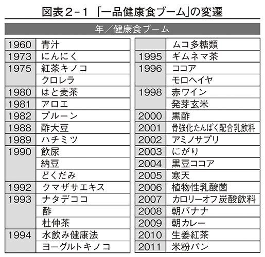

| 「健康食」のウソ (PHP新書) | |
| 幕内秀夫 | |
| PHP研究所 (2011) | |

「健康食」のウソ
幕内秀夫
いま世の中には、食と健康に関する情報があふれています。この本を手に取ってくださった方のなかにも、そうした情報に気をつけている方が多いことでしょう。
健康になるための情報がこれほど流布しているというのに、周囲を見渡すと、不健康な人の、なんと多いことか。ひょっとして、あなたもその一人ではありませんか？
▽栄養バランスを考えて、なるべくたくさんの種類のおかずを食べるようにしている。
▽ごはんは太るからあまり食べないが、野菜や果物は意識してとるよう心がけている。
▽腸の調子をよくし、骨を丈夫にするために、乳製品や牛乳を毎日とっている。
▽減塩醤油や減塩みそを使い、おかずはできるだけ塩気を薄くするようにしている。
▽からだによいと言われる有機野菜や玄米を食べるようにしているから安心だ。
健康に対する意識が高い人は、このようなことをいろいろと考えて食事をしています。
けれども、じつは健康にこだわる人ほど、かえって不健康になっている可能性が高いのです。なぜなら、誤った健康情報や常識に踊らされている危険性があるからです。
健康情報の誤りの第一は、戦後の栄養教育がつくりあげた「常識」です。
日本では昭和三十年代から、気候風土も体質も違う欧米の栄養学をそのまま受け入れ、動物性食品や油を多くとるようになりました。その結果、生活習慣病、肥満、アレルギー、アトピーなどに悩む人が多くなってしまったのです。
その反動として、健康情報があふれるようになりました。これが第二の誤りです。
なぜなら、巷に流れるさまざまな健康情報を冷静に見てみると、食生活の話ではなく、「○○を食べると病気が治る」「□□という食品には血圧を下げる効果がある」「△△を食べればやせる」といった、一つの食品の話がほとんどだからです。
そもそも、健康を食生活だけで語るには無理があります。運動不足、ストレス、睡眠不足、環境など、健康にはさまざまな要素が絡んでいると考えるべきです。ましてや、一つの食品で病気が治ったり予防できたりすることなど、ありえません。
第三の誤りは、多くの人が体重や血圧、血糖値などを気にしているにもかかわらず、「食の快楽」に走っていることです。「九八〇〇円日帰り食べ放題」のようなツアーは人気の的ですし、「食の遊園地」と化したデパ地下には、中高年男性までもがひしめいています。
怒濤のような「食の快楽」の裏返しとして、健康に自信をもてない人がますます増えました。そこにつけこむ業者が、「○○を食べて健康になりましょう」とハイエナのように押し寄せ、「栄養バランス」という言葉だけが一人歩きしている――これが、いまの日本の病理です。いわば、みんなが「健康」という名の「病気」になってしまっているのです。
では、ほんとうの意味で健康になるために、私たちはどのような食生活をすればいいのでしょうか。その方向性を示したのが本書です。
第１章では、食生活をトータルに見なおすためのヒントを掲げました。そのヒントとは、日本人にいちばん合った食生活の知恵＝「粗食」に隠されています。ごはんとみそ汁を中心とした「当たり前の食事」を、いまこそ見なおしたいものです。
第２章では、ここ数年のあいだにブームとなった「健康食」のウソを、一つひとつ暴いていきます。根拠のアヤシイ「健康食」やサプリメントなど必要ないと理解していただけるでしょう。
第３章では、戦後の栄養教育の誤りについて説明します。これまで刷り込まれてきた「食と健康の常識」が、いかにアテにならないものか、おわかりいただけるものと思います。
第４章では、嗜好品をどうとらえるかということ、そして、極端なダイエットや食事療法を続ける危険性についてお話しします。これからの人生を健康で幸せに過ごしていきたい方はもちろん、お子さんの食生活に頭を悩ませている方にも役立つはずです。
もっとも大事なのは「考えずに食べる」ということ。病気のため日常的に食事に注意すべき人は別として、みずからの本能に従って食べるのが自然な行動なのです。健康によいとか悪いとかを考えるから、話がややこしくなってしまうのです。
この本が「ほんとうにからだによい食事とは何か？」を考えるきっかけとなり、みなさんが「健康食」の呪縛から解き放たれて、心身ともに健やかな生活を取り戻す一助になれば幸いです。
二〇一一年九月
幕内秀夫
「健康食」のウソ 目次
健康情報にだまされるな！
日本にはむかしから「賀寿」という習慣があります。長寿の祝いのことで、中国から伝わりました。平安時代の貴族たちは、四十歳から長寿を祝ったそうです。きっと現在の八十歳くらいのイメージだったのでしょう。
いまの日本では、八十歳などめずらしくありません。多くの人が「長生き」からイメージする年齢は、百歳ではないでしょうか。
「できれば百歳まで生きたい」という目標をもっている方は、たくさんいるでしょう。「百歳になっても元気に暮らしている人は、どのような生活をしているのだろう。見習いたいものだ」と思っている方も多いはずです。
こうした関心をもつのは自然なことですが、問題なのは、「元気な高齢者は何を食べているか」という一点に関心が集中しがちなことです。
たとえば、聖路加国際病院理事長の日野原重明先生は、明治四十四年（一九一一）生まれ。百歳にして現役の医師です。そんな日野原先生が肉をよく食べることは、かなり知られている話です。
テレビや雑誌では、日野原先生がステーキを食べている姿がよく報じられるので、それを見た人は、「肉をモリモリ食べるのが長寿の秘訣」という印象をどうしても、もってしまいます。
けれども、日野原先生は毎日、肉ばかり食べているわけではなく、ごはん、漬物、野菜の煮物なども食べているそうです。「健康の秘訣は腹八分目か七分目」ともおっしゃっています。朝食と昼食はごく軽く、夕食は魚か肉に野菜、そして、ごはんをきちんと食べる――これが日野原先生の食生活のスタイルのようです。
昼間は病院の仕事や講演会などを分刻みのスケジュールでこなし、夜は午前三時ころまで本の執筆などをされているそうですから、夕飯を多めにとっても、胃がもたれたまま寝てしまうようなことはないでしょう。
ですから、日野原先生の食生活は、昼間あまり運動をせず、夜は九時ころに布団に入るライフスタイルの高齢者が、そのまま真似できるものではありません。
「肉を食べているから長寿で元気」というのは、大きな誤解なのです。むしろ、見方を逆にすべきです。
日野原先生は、ステーキを食べているから百歳でも元気なのではなく、百歳になってもステーキを食べられるほど元気で、消化機能が優れているのです。
もう一人、例をあげましょう。かつてギネスブックに長寿世界一と記録された泉重千代さんです。慶応元年（一八六五）生まれで、昭和六十一年（一九八六）に百二十歳で亡くなりました。生年に関しては疑問もあるようですが、百歳以上だったことは間違いないでしょう。
鹿児島県徳之島生まれの重千代さんは、若いころからサトウキビ畑や港で働いて、からだをよく動かし、規則正しい生活を送っていたそうです。黒砂糖焼酎が好きで、晩年まで飲んでいました。そのため「重千代」という名の焼酎まで売り出されたほどです。そしてなんと、百十五歳まで煙草を吸っていました。
だからといって、「焼酎と煙草で長生きできる」と思う人がいるでしょうか？
「百十五歳まで煙草を吸い、晩年まで焼酎を飲めるほど丈夫だった」と考えるのがふつうです。
つまり、「長寿の人は何を食べているか」は、まったく意味のない質問なのです。
元気で長生きしている人たちが、からだをつくりあげる若い時期に何を食べていたか、どのような生活をしていたかも調べずに、いま食べているものだけを取り上げて「長寿の秘訣はこれだ！」と言ったところで、なんの説得力もありません。
そもそも、たった一つの食べ物を取り上げて、健康にプラスだ、マイナスだと断定すること自体がおかしいのです。
巷に流れる健康情報は、「からだのために、こういった食品をとりましょう」というものばかり。それだけなら食生活の一端を語っているともいえますが、いまの栄養学は、食べ物の栄養素を分析して「この栄養素は健康にいい、これは悪い」と言っているだけです。
「鉄分豊富なホウレンソウは貧血予防にいいが、シュウ酸も多く含まれている。シュウ酸がカルシウムとくっつくと結石の原因になるので注意しましょう」
こんな情報の垂れ流しに、いったいなんの意味があるというのでしょうか？
ホウレンソウを食べて鉄分だけ飲み込み、シュウ酸は吐き出しなさいと言っているようなものです。
これを私は「ヴェニスの商人理論」と名づけました。
シェイクスピアの作品『ヴェニスの商人』では、金貸しのシャイロックから借りた金を返せなくなったアントーニオが、「返済できないときは胸の肉一ポンドを切り取らせる」という証文を盾に訴えられます。けれども、彼の親友の妻ポーシャが裁判官に変装し、「肉を切り取るのはよいが、血は一滴も流してはならぬ」と言い渡し、アントーニオは救われます。
戦後の栄養学者たちが言っているのは、「血を流さずに肉を切れ」も同然なのです。
「サツマイモは食物繊維が多く便通をよくする」「卵は良質のたんぱく質を含む」と主張したのも栄養学者ですが、そもそも、食物繊維やたんぱく質などという食べ物は、この世に存在しません。
もちろん、こうした知識をもって食生活の参考にするのはいいことだと思います。けれども、そこから飛躍して「だから食物繊維をとるためにサツマイモを食べなさい」「たんぱく質をとるために卵をぜひ食べましょう」となってしまったことが問題なのです。
「木を見て森を見ない」ということわざがあります。物事の細部のみにとらわれて、全体を見ようとしないことのたとえです。食品に含まれるわずかな栄養素だけを取り出して、「いい、悪い」と主張する栄養学者たちは、まさに「木を見て森を見ない人々」といえるでしょう。
健康は生活全体の問題です。そのなかには当然、食事も含まれますが、食事だけで健康を語れるものではありません。
私は食生活について研究し、埼玉県川越市の帯津三敬病院で二十数年にわたって食事指導をしてきました。そこで感じたのは、食生活全体をよくすることでさえ、健康にとっては、ほんの一部の役割しか果たせないということです。
ましてや、ある食べ物さえ食べれば健康になるというのは、どう考えても無茶な話です。
あとでくわしく述べますが、「一品健康食」を唱える学者や業界の人たちは、自分たちに都合のいいデータだけを取り出して、「牛乳を飲むと骨が丈夫になる」「肉を食べると元気になる」などと言っているにすぎません。トータルでどのような食生活をしていくべきかは伝えず、部分だけで全体を語ろうとし、断片的な情報をまき散らしています。
「どうにか頑張って百歳まで生きたい」「元気に仕事を続けたい」「家族の健康のために......」とまじめに考えている人ほど、さまざまな断片情報を集め、「専門家の言うことだから」と忠実に実践しようとしますが、すぐに矛盾に突き当たります。多くの人が混乱してしまうのは、無理もないことだと思います。
食生活の基本は、一つひとつのお皿ではなく、それらを載せているテーブル全体を考えることです。いわゆる「健康食」に共通する問題点は、この部分がすっぽりと抜け落ちていることだといえます。
ここで、あなたの食生活をチェックしてみましょう。図表１ １の一三の質問に、「はい」「どちらともいえない」「いいえ」のどれか一つを選んで○をつけてください。○のついた点数を合計したら、《診断結果＆アドバイス》と照らし合わせてみましょう。
１の一三の質問に、「はい」「どちらともいえない」「いいえ」のどれか一つを選んで○をつけてください。○のついた点数を合計したら、《診断結果＆アドバイス》と照らし合わせてみましょう。
診断結果 ＆ アドバイス
〈Ａランク １００～90点〉
理想的な食生活と言っていいでしょう。このままでも充分ですが、ゆとりがあるのでしたら食品の安全性を考えてみましょう。
安全性という観点でいちばんお金をかけたいのは、毎日使う調味料です。調味料がもっとも大切なわけではありませんが、買い物の手間や経済的な事情などを考慮すると、調味料を検討するのが現実的だと考えるからです。次のことを参考にしてください。
▽みそ――「国産大豆からつくられたもので、発酵年数が半年以上」を最低条件とし、もう少しこだわりたい人は天然塩が使われているもの、さらにこだわりたいなら無農薬大豆からつくられたものです。
▽醤油――無農薬の国産大豆からつくられたもの。
▽油――使うとしても少量にしたいので、ふつうの食用油でかまいません。こだわりたい人は、溶剤の入っていないものを自然食品店で購入するといいでしょう。
自然食品店のものは値段が高いのですが、高いなりの理由があります。ただし、そこで買った食品が、すぐに健康にプラスになるわけではありません。食品は薬ではないのですから、どんな食品であれ「健康に効果がある」と考えること自体が間違いです。
〈Ｂランク 89～70点〉
かなりいい食生活です。「いいえ」に○をつけた項目を見なおして、「はい」の点数が高い項目を優先的に改善していくといいでしょう。
質問のなかで「いいえ」に○がつきやすいのは、２の「夕食は８時前には食べている」ではないでしょうか。昼食と夕食のあいだが空きすぎているため、夕方に甘いお菓子や缶コーヒーなどをとり、十時ごろに自宅で夕食をとる人は多いと思います。
まずはここから改善しましょう。コンビニのおにぎり、海苔巻、稲荷寿司などでいいので、夕方六時から七時くらいに主食のみの夕食を食べてしまうのです。そうすれば「おやつ」を夕食代わりにしなくてすみますし、夜遅くに重たい食事をとることも避けられるはずです。
〈Ｃランク 69～50点〉
ボーダーラインすれすれの食生活です。いまのライフスタイルでは、やむをえない面もあるかもしれませんが、このままの食生活を続けるのは好ましくありません。
「ごはん、みそ汁、漬物」を基本食として意識し、外食でも日に二回はごはんを食べましょう。それができたら、肉中心の脂っこいおかずを見なおし、野菜、魚介類、豆類などにシフトしていくといいでしょう。
〈Ｄランク 49～30点〉
根本的に食生活を見なおす必要があります。現在の食生活を続けていけば、生活習慣病へまっしぐらです。生活習慣病の原因を食生活のみで語ることはできませんが、これまで外食やコンビニ弁当が中心だった人はもちろん、自宅で食事をつくっている人も、「手づくりがベスト」という気持ちを一度捨て、質のよい市販品を上手に利用することから始めましょう。
スーパーに行けば、パックごはん、冷凍の焼きおにぎり、インスタントみそ汁、焼き魚やおひたしなどのお惣菜、煮豆や佃煮などの常備食がたくさん売られています。これらを利用すれば、単身者でも「まともな食事」に近づけます。そのうえでゆとりがあれば、ごはんとみそ汁だけはつくってみましょう。そこに市販の常備食をプラスするだけでもいいのです。これができれば、すぐに食生活はＣランクに上がります。
〈Ｅランク 29～０点〉
失礼ですが、食事になっていません。このような食生活を長く続けてきた人は、すでに、からだになんらかの問題が起きていても不思議ではありません。根本的に食生活を見なおすことをおすすめします。食事をつくることなど考えなくていいので、〈Ｄランク〉のアドバイスを参考にして、とにかく主食のごはんを食べることから始めましょう。
さて、あなたの食生活はいかがでしたか？ ひどい結果だった人も、ガッカリすることはありません。ちょっとの工夫と努力だけで、必ずいまより、よい食生活になるはずです。そのためのヒントを、以下に述べていきます。
「何を食べたら健康になりますか？」
そう訊かれるたびに、私はこう言いつづけています。
「ごはん、みそ汁、漬物を基本とした食生活でいいのですよ」
『粗食のすすめ』（東洋経済新報社／新潮文庫）をはじめとして、本に何度も書いているように、かつて日本のどの家庭でも見られた当たり前の食生活をすればいいのです。
ごはんからエネルギー源となる糖質（でんぷんに含まれています）をとり、みそから血や肉をつくる材料となるたんぱく質を摂取すれば、あとは季節の野菜のぬか漬けでもあれば充分。野菜をとるのに、ビタミンＣだ、カロチンだと難しく考えることはありません。
なかでも食生活の改善で大事なことは、とにかく、ごはんをきちんと食べること。その理由を説明しましょう。
 ごはんは飽きずに年間を通して毎日食べることができる
ごはんは飽きずに年間を通して毎日食べることができる
世界で主食とされているものには、米、小麦、芋、トウモロコシなどがありますが、このなかで、加工しないで一年を通して毎日食べることができるのは米だけです。
パンやパスタは小麦を加工しなければ食べられません。トウモロコシは水に弱いので、雨が多いところでは育ちにくい。サツマイモは主食の条件がほとんどそろっているのですが、寒さの厳しいところでは栽培できませんし、甘みが強いので毎日食べると飽きてしまいます。
その点、米は広範囲でつくることができ、加工しなくても水で炊けば食べられます。水も米もにおいや味はほとんどなく、ごはんの甘みはサツマイモのようにきつくないので、毎日でも飽きずに食べられます。
 ごはんは消化吸収がゆるやか
ごはんは消化吸収がゆるやか
パンやパスタは小麦粉を原料とした粉食で、消化吸収が非常に速く、腹もちがよくありません。消化吸収が速すぎると、インシュリンの消費も進みます。
その点、粒食の米は消化吸収に時間がかかるため、インシュリンの消費ペースがゆるやかです。世界的に糖尿病が増えているいま、米飯のよさを見なおす国が多くなっています。
 ごはんを主食にすれば太らない
ごはんを主食にすれば太らない
「ごはんを食べると太る」と思っている人は多いようですが、それは大きな誤解です。
米などに含まれる糖質は優先的にエネルギーとして消費されるので、太る原因にはなりません。また、ごはんは米にたっぷりの水分を含ませて炊き上げたものなので、量のわりにはエネルギーが低く、ダイエットには効果的な食べ物なのです。
パンに合うのは、ほとんどが油料理です。パンにバターを塗る人はいても、みそを塗る人はまずいません。また、パンのおかずとして、ムニエルやバター炒めにすれば飲み込みやすいですが、焼き魚やホウレンソウのおひたしを食べたら喉に詰まってしまいます。
パスタは、それ自体にオリーブ油がまぶしてありますし、ソースには大量の油が使われています。脂肪の多いチーズもつきものです。蕎麦やうどんも粉食ですが、蕎麦に粉チーズをふりかける人はいないでしょう。もっとも、いまは「サラダうどん」なるものもあるので、いずれ蕎麦にもマヨネーズをかけて食べる時代が来るかもしれませんが。
それはともかく、パンやパスタは腹もちが悪いため、食後しばらくすると、また何か欲しくなり、ケーキやスナック菓子など甘くて脂肪の多いものを食べてしまいがちです。その結果、かえって太ってしまうのです。
つまり、パンやパスタをごはんに替えるだけで、不必要な油や砂糖を排除できるわけです。人間には生まれつき、でんぷん欲求というものがあり、でんぷんに含まれる甘みを求めます。ごはんを主食として、そこから甘みをとるのがいちばん自然なのです。
 ごはんには添加物の心配がない
ごはんには添加物の心配がない
水と米しか使わないごはんは、パンと違って添加物の心配がありません。
みなさんは、日本で市販されているパンが、油や砂糖、そして添加物だらけであることをご存じでしょうか。一例として、ある食パンの原材料表示をあげると、「小麦粉、糖類、マーガリン、パン酵母、食塩、脱脂粉乳、発酵種、植物油脂、乳化剤、イーストフード、ビタミンＣ、原材料の一部に大豆を含む」と書かれています。
油と砂糖がたっぷり入っている日本のパンは、主食というよりは「不健康なお菓子」。添加物の多さからいっても、安全性はすこぶるアヤシイと言わざるをえません。
じつは、いまこの原稿を書いている私の目の前に、二〇〇八年十二月に購入したパンがあります。カチカチに固くなって油が滲み出ていますが、一見、三年近くも皿の上に載せたまま放置しているものとはわかりません。購入して一年間ほどは、いい香りもしていました。いまではさすがにヘンなにおいがしているので、知らない人が間違って口にすることはありませんが、カビも生えておらず、腐りもしていないのです。
このパンが置いてあるのは仕事場の台所で、エアコンはなく、すぐそばにはガスコンロがあって毎日お湯も沸かしています。そんな環境下にあって三年たっても腐らないパンとは、いったいなんなのでしょう？
ごはんのよさ、米のよさをいろいろと述べてきましたが、それを無にするおかしな食品がもてはやされています。米粉パンです。
粒食の米は、消化吸収がゆるやかな点が世界で見なおされているのに、その価値をわざわざなくしてつくる米粉パンには、米のよさが何もありません。
「お米からつくっただけあって、モチモチしておいしい」と言う人もいますが、市販の米粉パンは、ただの輸入小麦のパンに米粉がわずかに入り、砂糖たっぷりのものがほとんどなのです。それのどこが「米粉パン」なのかと思います。
学校給食に米粉パンを導入している自治体のなかには、「子どもたちの食文化への関心を高めるのがねらい」と、本気で考えているところがあります。米粉でつくったパンが、どこの国の食文化を伝えるというのでしょうか？ ふざけるのもいいかげんにしてほしいものです。
何より、米粉パンには「健康」がどこにも見当たりません。どんなパンだろうが、マーガリン、バター、ジャムに、揚げ物、炒め物、マヨネーズやドレッシングたっぷりのサラダという、油だらけの献立になることは何も変わりません。
ふつうのパンと違うのは、値段が高いことだけ。日本の米はおいしいので、諸外国の米より価格が高いのです。ばかばかしくてお話になりません。
最近ではついに、ごはんにかける〈ふりサク〉というスナック菓子まで登場しました。スナック菓子を、ごはんにふりかけて食べるのですよ！
回転寿司でフライドポテトが回り、学校給食にアメリカンドッグが平気で出てくるくらいですから、いずれはこうした商品が登場するとは思っていました。冷静に見て、私は「まだ早い」と思っているのですが、メーカーは市場調査をして「売れる」と確信したから開発したのでしょう。新聞に大きな広告も出たそうです。
〈ふりサク〉は、ごはんにかけるせいか、従来のスナック菓子より脂肪は少なく、二五パーセントです。それにしても、自然界の食品で脂肪二五パーセントを上回るのは、サーロインステーキとマグロの大トロくらいでしょう。ウナギの油でも、それよりは下ですし、サンマやサバなど勝負にもなりません。
これが売れて、子どもたちが日常的にごはんにふりかけるようになったら、この先の日本人の食生活はたいへんなことになってしまうでしょう。
以前、テレビのある情報番組で、「一日一食の米飯より、一日三食の米飯のほうが内臓脂肪の蓄積を防ぐのに効果的」と言っていました。こういう情報が流れると、「朝・昼・晩、絶対にごはんを食べなければいけない」と思い込んでしまう人がいますが、前の晩に食べすぎてしまったときや、日常的に夕食が遅い人は、翌朝、無理してごはんを食べる必要はありません。
また、「玄米は白米より優れている」とだれかが言うと、独特のにおいが苦手な人まで我慢して玄米を食べたり、「自分は玄米、子どもは白米」と、ごはんを分けて炊いたりする人が出てきます。罪つくりな情報の多さに、憤りすら感じます。
白米より玄米のほうが食物繊維、ビタミン、ミネラル類が多く含まれているのは事実ですが、白米を避けなければいけない病気でもないかぎり、「自分は玄米、子どもは白米」のようなやり方はおすすめできません。食事は三百六十五日、毎日のことなので、無理をしても長続きするはずがありません。家族みんなで同じものを食べるのが、継続の秘訣です。
もちろん、ごはんをうまく飲み込めなくなったおじいちゃん、おばあちゃんのためにお粥をつくったり、子どもだけおにぎりにしたりすることはあるでしょう。でも、健康のためにごはんを分けて炊くことは、それとは意味合いが根本的に違います。
「玄米を食べるか、白米を食べるか」は二の次、三の次で、「いかにして、ごはんをもっと食べるか」がいまの日本人の課題なのです。玄米が苦手なら、分搗米でも、胚芽米でも、もちろん白米でもいいのです。
ところで、私が提唱する「粗食」は、これまでに「菜食主義だ」「時代に逆行している」「粗食では長生きできない」といった批判を受けたことがあります。どの批判もピントはずれで、すぐに消えていきました。
「貧しかったころの日本の食事が理想だ」と私が言ったことなど一度もありません。菜食主義にも一貫して疑問を呈しており、著書のなかにあるレシピには、魚も卵も入っています。批判している人たちは、私の本をよく読んでいないのでしょう。
私が尊敬する民俗学者の宮本常一先生は、日本列島を何周も歩きまわり、庶民の食事や生活について詳細な記録を書き残しました。先生の民俗調査の旅は、延べ日数にして四千日、みずからの足で歩いた距離の合計は、地球を四周したのと同じ一六万キロにも及びました。
宮本先生の著書には、田舎へ行くと栄養失調で腹のふくれた子どもがかなりいたことが記されています。白いごはんはお腹いっぱい食べられても、たんぱく質などが少なすぎたからだと先生は言っています。白米大食で動物性食品が少なかったことが、感染症をはじめとする多くの病気の原因だったのではないかと私も思います。
ではなぜ、私はごはんをすすめるのか？
いまの日本人があまりにもごはんを食べなくなったからです。
その一方で、カタカナ主食（パン、菓子パン、パスタ、ラーメン、ピザ、ハンバーガーなど）が増えています。それらには、砂糖や油脂類だけではなく食品添加物が使われているものもあります。あるいは肉、食肉加工品、牛乳製品などの動物性食品が過剰になっています。
それらを減らすもっとも簡単で現実的な方法が、ごはんをきちんと食べることだと考えているのです。「むかしに帰れ」ではなく、あくまでも時代に即した提案をしているつもりです。
近年は糖尿病などの増加により、「糖質の多い」穀類や芋類、砂糖などは食べずに、肉や魚介類、野菜などを中心に食べたほうがよいといった説も登場しています。さまざまな主張がありますが、ひとまとめにすれば「低炭水化物（ローカーボン）ダイエット」と呼ぶことができます。
「ごはんを抜いてステーキを食べよう」などという主張も出てきました。ステーキならまだいいかもしれません。極端なものになると、「原始人ダイエット」（パレオ・ダイエット）なども紹介されるようになっています。その実践者のなかには、ふだん生肉を主食にしている人もいるということです。
それらの主張が拠りどころにしているのは「四百万年という人類の長い歴史のなかで、農耕の歴史はわずか一万年ほどでしかない。狩猟・採集によって肉や魚を食べていた歴史は、くらべものにならないほど長い」ということ。
たしかに、ここまでは正しい。でも、そんなことはわざわざ力説しなくても、みんな中学や高校で習っています。
『The Paleo Diet』（パレオ・ダイエット）の著者である進化生物学者ローレン・コーデイン教授は、その本のなかで「世界じゅうの食生活が穀物に頼りすぎている。先史時代の食事のメニューからかけ離れてしまったことが、がんや肥満、高コレステロールといった文明病をもたらした」といった主旨のことを述べています。低炭水化物ダイエットを唱える人たちも、ほとんど同じ主張をくりかえしています。
農耕が始まる以前は、肥満も糖尿病も少なかった可能性が高いと思います。なぜなら、糖尿病にかかるほど長生きした人が少なかったからです。
たとえば、日本の縄文時代の平均寿命は十代前半くらいだったと推定されています。乳幼児の死亡率がきわめて高かったためです。十五歳以上の平均死亡年齢は、男性で三十歳から三十四歳、女性は二十歳から二十四歳くらいだろうと言われています。いずれにしても、現在とは比較にならないほど寿命が短かったはずです。
それだけ若くして亡くなるのですから、糖尿病もがんも少なかったのは当然。穀物を食べるようになって糖尿病が増えたのではありません。長生きするようになって糖尿病が増えてきたのです。
じつは、一連の主張はいまに始まったことではありません。かつて「縄文食健康法」なるものが話題になったことがあります。いま、それを実践している人は、はたしているのでしょうか......。ブームとはそういうものです。
粗食批判には、こうした突拍子もない話が多いのですが、最近、笑っては見過ごせない説が出てきました。それは「粗食のせいで低栄養の老人が増えている」です。
以前、新聞に「低栄養の人が増えている」という記事が出ていました。要約すると、次のような内容です。
――日本人のエネルギー摂取量は徐々に減り、近年では終戦直後のレベルにまで下落したとされる状況のなか、専門家から、適切な食物摂取ができず栄養状態が悪化する「低栄養」を問題視する声があがっている。原因としては、加齢による食欲減退、食べ物を飲み込む機能の低下、買い物難民、粗食がからだによいという認識、健康によいと言われる特定の食品を重点的に食べる、といったことも関係しているという。低栄養の予防には、たくさんの食品群からバランスよくとることが大事だという......。
「粗食がからだによいという認識」とは、私の主張を指しているのでしょうか？
二〇一〇年四月に放送されたＮＨＫの番組『ためしてガッテン』でも、同じような説が展開されていました。
――戦後まもないころまでは、ごはん、みそ汁、漬物、煮物、魚中心の伝統的な日本食だったが、これでは充分なたんぱく質が摂取できず、結核や肺炎、脳出血で亡くなる人が多かった。そのため、国の主導による栄養改善普及運動が始まり、肉や卵を油で調理する方法が紹介され、日本の食卓には洋食が増えていった。その成果もあり、必要なたんぱく質がとれるようになって栄養バランスがよくなり、結核、肺炎、脳出血の死者は激減、日本は世界一の長寿国になっていった......。
この番組では、「階段から落ちて骨折し、病院で調べたところ、たんぱく質不足による低栄養がその背景にあることがわかった」という一人暮らしの八十七歳の女性を取り上げ、「肉を週に一度も食べていない」とか、「一人暮らしになってから自分の好きなものしか食べなくなった」とか、「健康のため魚や野菜などをすすめる健康情報もあふれるようになった」（これも私の主張を指しているのでしょうか？）とか、お年寄りの不安を煽るようなことばかり言っていました。
そしてやはり、たくさんの食品群を食べている人のほうが低栄養を予防・改善でき、健康になれるとの説を展開していたのです。
これらの説には、いくつもの誤りや綻びがあります。
第一に、「食べる品数が多い高齢者は元気」という説。これはすでに述べたように、「品数豊富に食べられるほど元気」なのであって、「多くの種類を食べているから元気」なのではありません。品数を多く食べるには、家庭環境や経済環境も関係してくるはずです。
第二に、「伝統的な日本食を食べていた時代の日本人は短命だった」という説。それまでの日本には、長寿の人がいなかったと言わんばかりです。
歴史好きの方ならご存じかと思いますが、徳川家康は将軍になってからも好んで麦飯を食べ、おかずは焼きみそだけのこともめずらしくなかったそうです。天下を完全に平定した大坂夏の陣では、満七十三歳という高齢にもかかわらず、みずから兵を率いて出陣し、その翌年に七十四歳で亡くなりました。いまから四百年近く前のことです。粗食だった家康は、驚異的な長寿だったといえます。
この一事からしても、「伝統的な日本食のせいで短命」なんてウソっぱちだとわかります。むしろ、若いころから粗食だった人たちが長生きしている例も少なくないのです。
第三に、「国の栄養改善普及運動によって洋食を食べる人が増えた結果、日本は世界一の長寿国になった」という説。これはまったくのデタラメです。国が洋食をすすめたのは、国民の健康を考えたからではなく、アメリカの圧力があったからです。
これについては第３章でくわしく述べますが、国の栄養改善普及運動によって「栄養バランス信仰」が生まれ、数えきれないほどの「一品健康食」が登場するようになりました。それが現在にいたるまで続き、私たちを混乱させているのです。
第四に、「肉を食べないとたんぱく質が不足する」かのように言っている点です。動物性たんぱく質は、肉を食べなくても魚からとれます。新聞で取り上げられた八十七歳の女性も、肉をほとんど食べなかったからこそ、そこまで長命だったとの解釈も成り立つのではないでしょうか。だいたい、肉を食べるか食べないかだけで論じること自体がおかしいのです。
近年、日本人の肉の消費量が減っているため、畜産業界と、業界に都合のよいことを言う栄養学者たちは、「肉を食べないとたんぱく質が不足する」と、さかんに主張しています。
肉の消費量が減少している原因は、「肉より野菜がヘルシー」と考える人が増えたこと（これはこれで問題なのですが）、ＢＳＥ（牛海綿状脳症、狂牛病）や鳥インフルエンザの発生などがあげられますが、いちばん大きな原因は人口の減少と高齢化です。
お年寄りが焼き肉屋の常連などという話は聞いたことがありません。加齢とともに、脂っこい肉に食指が動かなくなるのは、みなさんも経験的にわかると思います。
それより何より、お年寄りに肉をすすめる栄養学者には、図表１２を見てからものを言ってほしいと思います。
これは、東京都福祉保健局が公開している資料です。平成二十一年度（二〇〇九）に東京都芝浦食肉衛生検査所で、病気のために屠殺禁止処分や廃棄処分になった家畜の頭数を表しています。牛は約七五パーセント、豚は六七パーセントにも及んでいます。
なぜ、これほど病気の牛や豚が多いのかというと、まずは飼料の問題があります。牛の場合で言いますと、本来は草食動物ですから牧草を食べるのですが、おいしくてやわらかい肉にするために、いまは外国から輸入した、トウモロコシなどを食べさせています。
また、飼料の使用効率をよくするために、牛を運動させません。人間も牛も、のんべんだらりとしているほうが霜降りになりやすい。運動して筋張った牛の肉より、霜降りのほうがおいしいので高く売れます。そうした肉をつくるために、牛に運動をさせないのです。
食性が合わない飼料を与えているうえに運動をさせないので、どうしても病気になる牛が出てきます。そこで薬を与えます。なかには、与えてはいけない薬を注射される牛もいます。からだに注射針が残っていたために処分された例もあります。屠殺禁止処分や廃棄処分になるのは、そうした牛たちです。
お年寄りに向かって「肉を食べなさい」と言う人たちは、こうしたことをわかったうえで言っているのでしょうか？
この数字を見て、それでも「肉を食べろ」と言うのでしょうか？
『ためしてガッテン』で展開された「肉を食べないとたんぱく質が不足する」との説は、「肉が売れなくなっている→日本には高齢者があふれている→高齢者はあまり肉を食べない→健康のためだと言って肉を食べさせれば巻き返しが図れる」という業界の意図が見え隠れしているように思えてなりません。
高齢者の低栄養を防ぐ援助は、私も必要だと思います。ただし、それは「多品目をバランスよく食べること」や「肉を食べること」ではありません。きちんとエネルギーを摂取できる環境づくりが大切なのです。
高齢者、とくに独居老人の場合、からだの不調で台所に立てない、経済的な理由から食事の回数を減らしている、新聞も指摘したように、近所に店がなくて買い物ができない、といったケースも考えられます。高齢者の食生活は「何を食べるか」ではなく、「どうやって食べるか」が問題だと私は思っています。
みそ汁は、ごはんとの相性がピッタリです。大豆（みそ）と、だし（煮干しやかつお節）のほかに、野菜やわかめなどの海藻が少し入っていれば、からだに必要なものは、かなりとることができます。
平成十五年（二〇〇三）、国立がんセンター（現・独立行政法人国立がん研究センター）が、「みそ汁を一日三杯以上飲む人は、飲まない人よりも閉経後の乳がんにかかる率が下がる」との調査結果を発表して、大きな話題になったことがありました。
このとき注目されたのが、みその原料である大豆に含まれているイソフラボンという物質でした。女性ホルモンのエストロゲンと構造が似ていて、エストロゲンの作用を抑えるはたらきがあるのではないかと言われたのです。
これに尾ひれがつき、「みそ汁は乳がん予防になる」「イソフラボンは乳がんに効く」と話が大きくなっていき、イソフラボンは健康食品としても売り出されるようになりました。
ところがその後、アメリカから「イソフラボンの過剰摂取は乳がんの発症リスクを高める可能性がある」との指摘が出てきたのです。話がまったく逆になってしまったわけで、一時は消費者が大混乱に陥りました。
結局、平成十八年（二〇〇六）に内閣府の食品安全委員会が、「ふつうの食事のとり方なら安全性に問題はない。食事以外に健康食品などからイソフラボンを追加摂取する量は、一日三〇ミリグラム程度まで」とする上限値を設定し、騒動はいちおう収まりました。
けれども、両方の情報を耳に入れた人たちのなかには、「イソフラボンは乳がん予防になるのか、ならないのか。いったいどっちなの？」といまでも混乱している人がおり、私も病院で患者さんから質問を受けたことがあります。
国立がんセンターの発表があったとき、みそ汁だけを乳がん予防の要因ととらえるのは無理があるのではないかと私は考えていました。むしろ私が注目したのは、「みそ汁を一日三杯以上飲む」という食生活のほうです。
みそ汁を朝・昼・晩しっかり飲んでいる人は、間違っても、パンやパスタを主食とする食生活ではない。ごはんを主食として、みそ汁があり、ほかに何か一、二品おかずがつくような日本の伝統的な食生活をしている人たちだろう......。言い換えれば、「一日三回、箸をもつ人には乳がんが少ない」と言うのと同じです。
国立がんセンターの調査結果そのものは正しいと思いますが、注目すべきは「みそ汁」という単品ではありませんでした。「みそ汁を一日三杯飲む食生活とは、どういうものか？」と、ちょっと想像力を働かせればよかったのです。
そうすれば、主食のごはんを中心とする日本食だと気づいたはずなのに、その部分が抜け落ちたために、「みそ汁さえ飲めば乳がんにならない」「イソフラボンは乳がんの予防になる」といった誤解を生んでしまいました。
じつは、こうした落とし穴は、すべての「一品健康食」に共通することなのです。
あぶない「一品健康食ブーム」
書店に行くと、『○○健康法』といった本が目につきます。テレビでも、「○○でやせる！」「○○で免疫力アップ！」といった番組をよくやっています。
「○○」に入るのは、ほとんどが食品か栄養素です。それも「納豆健康法」「玄米でやせる」「がんとビタミンＣ」などのように、一つの食品や栄養素が中心になっています。
こうして紹介された食品や栄養素のなかにはブームになったものもありますが、一年と続かなかった例がほとんどです（図表２１）。

以前、お昼に放送されていた情報番組『午後は○○おもいッきりテレビ』は、「赤ワインのポリフェノールが老化防止にいい」と紹介して、赤ワインブームを引き起こしました。「ココアは冷え性を改善する」という特集を組んだら、中高年女性が買い占めに走り、全国のスーパーや小売店からココアがなくなったこともありました。「ニンジンのβカロチンは美容にいい」と取り上げると、八百屋の店先に積まれたニンジンのそばに、「おもいッきりテレビで紹介されました！」と書かれたビラがすぐに張り出されました。
こうした現象自体はべつにいいのですが、問題なのは「そればっかり」になってしまいがちなことです。ポリフェノールがいいと聞けば、お酒をあまり飲めない人まで赤ワインをガブガブと飲む。カロチンがいいと聞けば、ニンジンを馬のように食べる。バナナがいい、きな粉がいい、生姜がいい、寒天がいいと、単品の食品や一つの栄養素の情報が氾濫し、みんながそればかり口にするようになってしまうのです。
以前から私は、これを「みの○んた症候群」と呼んでいます。
彼の番組だけが人々をふりまわしていたわけではありませんが、この番組から起きた現象は、食生活を一面的にしか見なくなる典型例といえます。食品単品にかかわる枝葉末節の情報が飛び交うなかで、多くの日本人が右往左往し、食生活をトータルに考えることができなくなっているのです。
こうした「一品健康食ブーム」は過熱する一方でしたが、平成十九年（二〇〇七）、『発掘！ あるある大事典』という情報番組でついに、データ捏造問題が発覚しました。
「やせる食材」として納豆を取り上げた際、やってもいない血液検査の結果として「納豆を食べて血液中の中性脂肪が正常値に戻った」と紹介したり、大学教授のコメントを意図的に創作したりしていたのです。過去にもデータの捏造や虚偽の内容があったことが判明し、番組は急遽、打ち切られました。
この事件が大きな社会問題となって以来、さすがにテレビ局も自粛して「一品健康食」をあまり取り上げなくなったのですが、最近ではＮＨＫの『ためしてガッテン』が同じようなことをまた始めています。
以前のこの番組は、「おにぎりをおいしく握る秘訣」「おいしい魚の焼き方」といった良心的な内容が多かったのですが、最近では、「こんにゃくで減量効果が期待できる」とか、「緑茶でがんの死亡率が激減!?」など、「みの○んた症候群」に陥ったとしか思えない内容が多くなっています。
これらの真偽についてはあとで説明しますが、国民の受信料で成り立っている番組までが「一品健康食」の情報を流して人々を混乱させるとは......。心ある視聴者は「合点がいかない」と思っているのではないでしょうか。
一つの食品の「効果」を大げさに紹介することを、「フード・ファディズム」（food faddism）と呼びます。ファディズムとは「一時的流行」のことです。
戦後最大のフード・ファディズムは、なんといっても「牛乳神話」です。栄養学者と酪農・乳業業界は、これまで「牛乳は完全栄養食品」と言ってきました。一つの食品だけで栄養を完全に摂取できるなど、ありえないことですが、平気でそう言ってきたのです。
当然のことながら、「完全栄養食品」と主張する根拠は何なのか、科学的な裏づけはあるのか、といった疑問の声がたくさん出てきましたが、栄養学者も業界も無視しつづけました。節操のない栄養学者や医者は、大手乳業メーカーの広告に登場、講演会では根拠もなく牛乳を推奨してきました。マスメディアも同じです。
こうして「牛乳神話」がつくりあげられてきたのですが、近年、牛乳の消費量は急激に減っています。
社団法人日本酪農乳業協会の消費動向調査によると、「牛乳をまったく飲まない」人の割合は過去十九年間は一〇パーセント前後で推移してきましたが、平成十八年（二〇〇六）は一三・七パーセントに急増したといいます。牛乳の消費が減った原因は、飲み物の多様化、少子化、牛乳配達の減少で購入者が減ったことなどだろうと私は思っています。
近年では『乳がんと牛乳』（ジェイン・プラント著、佐藤章夫訳／径書房）や、『牛乳を信じるな！』（外山利通著／メタモル出版）など、それぞれ主張は違いますが、牛乳に対する否定的な本が次々と出版されるようになりました。
なかでも、外科医の新谷弘実氏が書いた『病気にならない生き方』（サンマーク出版）はベストセラーになりました。その本のなかで牛乳の害が主張されたのです。
これに対して、日本酪農乳業協会と「牛乳乳製品健康科学会議」という牛乳推奨派の学者たちは、新谷氏の主張には科学的根拠がないとして、論拠を示すようにと公開質問状を出しました。
おそらく、牛乳の消費が落ち込んでいることへの危機感や、「完全栄養食品」と主張してきた栄養学者や医者の面子の問題もあり、新谷氏の本をじっくり検証して「科学的根拠がないから勝てる」と考え、公開質問状を出すにいたったのでしょう。
たしかに私も、新谷氏の主張には「科学的根拠」が乏しいと思いました。とはいえ、そもそも一つの食品の良し悪しは、科学的に断定できるものではありません。
それに、新谷氏の主張を「非科学的だ」と批判するならば、「牛乳は完全栄養食品」という主張はどうなのか？ 科学的根拠はあるのか、と問いつめたくなります。
いくら新谷氏の本がベストセラーになったといっても、いまだに「牛乳は健康にいい」と思っている人のほうが多いのですから、それまでと同じように無視していればやり過ごせたものを、公開質問状を出したことで、この問題は新聞や週刊誌に取り上げられてしまいました。「えっ、牛乳ってよくない飲み物なの？」とあらためて気づいた人も多かったと思います。
さて、この騒動の結末はどうなったか。
新谷氏の回答書の内容について、牛乳乳製品健康科学会議が発表した見解は、「科学的論拠が示されておらず、誤った統計の用い方も見られた」というものでした。ところが最後に、次のような一文が記されています。
最後におことわりしておきたいのですが、私どもは、牛乳が人間にとっての完全食品であるとは考えておりません。ご存知の通り、ビタミンＣや鉄分は僅かにしか含まれておりません。食べものは、バランス良く摂取することが重要だと考えております。
さすがにこれ以上、「牛乳さえ飲めば健康になれる」と言いつづけては、また同じような批判を受けると考えたのでしょう。当然の帰結、と言うべきです。
さらに、日本酪農乳業協会のホームページにある「牛乳百科事典」には、次のような文章が掲載されました。
牛乳は、子牛のためのものですから、人間の赤ちゃんが飲むのには適していません。
赤ちゃんに限定しているところは微妙ですが、こんな発言は以前ではありえないことでした。この変わりようには驚きを禁じえません。
こうして酪農・乳業業界や学者たちは、「牛乳は完全栄養食品」との説を自己否定したわけですが、「牛乳神話」が完全に崩壊したわけではありません。
たとえば、ある県の酪農業協同組合連合のホームページには、いまだに「牛乳は完全栄養食品」という大きな文字が堂々と掲げられています。
保健所のなかには、赤ちゃんのためのお母さんの授乳教室で、「おっぱいをよく出すために牛乳を飲んでください」といった指導を平気で行っているところがいまでもあります。飲んだ牛乳が、そのまま胸から出てくるとでも思っているのでしょうか。もし出てきたら、それは母（人）乳ではなく、まさしく牛乳でしょう。
「教育の一環」として実施されている学校給食では、ごはんのない日、パンのない日、肉や魚のない日はあっても、牛乳のない日はほとんどありません。
「牛乳を飲めば骨粗鬆症が予防できる」と信じ込んでいる人も、まだまだたくさんいます。牛乳にカルシウムが多く含まれていることは事実ですが、はたして飲むだけで骨粗鬆症を予防できるものでしょうか。
多くの整形外科医が言っているように、骨粗鬆症が増えたいちばんの原因は運動不足です。宇宙飛行士は無重力状態にいるので運動量がゼロになり、骨粗鬆症になってしまうそうです。私たちの生活は宇宙飛行士とは違いますが、これだけ運動不足の人が増えれば、骨粗鬆症が問題になるのも当然でしょう。
それに、カルシウムという栄養素は運動しないと沈着しないので、いくら牛乳を飲んでも運動しなければ、骨が丈夫になるかどうかはわかりません。健全な肉体労働者は、牛乳やヨーグルトをとっていなくても骨太です。三度の食事をしっかりとって、からだを使っているからです。
「牛乳を飲めば骨粗鬆症が予防できる」というのは、牛乳にはカルシウムが多い、骨にもカルシウムが多い、だから牛乳を飲めば骨が丈夫になる、という錯覚です。
カルシウムの多さを言うのなら、牛乳よりセメントのほうが大量に含んでいます。でも「セメントを舐めれば骨が丈夫になる」とは、だれも思いません。ところが「牛乳を飲めば骨が丈夫になる」と考える人は非常に多い。理屈としてはどちらも同じだと気づかないところに、「一品健康食」の危険性があるのです。
知人がもってきてくれた『日本内科学会雑誌』に、牛乳の飲みすぎで下痢や下血が続いた症例が紹介されていました。
患者さんは八十歳の女性で、十年から二十年のあいだ、便秘を防ぐために毎日三回、三五〇ミリリットルの冷たい牛乳を飲んでいたそうです。つまり、一日一リットルは飲んでいたことになります。その結果、下痢や下血が続くようになり、腸管嚢腫様気腫症と診断されました。私も病院で食事指導をしていましたが、こんな複雑な病名ははじめて知りました。
この症例を発表した医師は、牛乳が消化されず腸にガスがたまり、それが腸を圧迫して下痢や下血につながったのではないかと書いています（実際はもっと詳細に分析しています）。そして、牛乳を飲むのを中止させたら、下痢も下血もたちまち治ったというのです。
「便秘なので牛乳を飲むようにしています」と言う方には、私もたくさん出会っています。「それは便がゆるくなっているだけなので、決していいことではないですよ」と言ったことが何度もあります。私自身、何も口にしないで冷たい牛乳を飲むと、ガスでお腹が張ったり、下痢をしたりすることがあります。
これは乳糖不耐症というもので、牛乳の主成分であるラクターゼ（乳糖を消化する酵素）の活性が低いために起こります。日本の成人の約九五パーセントが、このような症状を起こしたことがあるそうです。これは、長いあいだ日本人には牛乳を飲む習慣がなかったためだと思われます。
日本に乳製品が入ってきたのは飛鳥時代（六世紀末～七世紀）のころだと言われていますが、明治になるまでは、貴族や将軍など、ごく限られた人たちのものでした。明治になると、多くの外国人が日本に入ってきて乳製品の需要が高まったため、新政府では牧場経営や牛乳の販売を奨励するようになりました。庶民にも牛乳を普及させるために、明治天皇が毎日二回牛乳を飲んでいる、との新聞記事まで出したそうです。
とはいえ、一般庶民が当たり前のように牛乳を飲むようになったのは戦後のこと。その変化があまりにも急激だったために、多くの日本人は、からだが適応できていないのです。
八十歳で一日一リットルの牛乳を飲むのは稀ですが、若いころに「牛乳は完全栄養食品」という神話を刷り込まれた年配の方には、食事がとれないときでも、「からだのために、せめて牛乳一本は」と考える「常識」が、いまだに根強く残っています。
また、子どもに一日一リットルの清涼飲料水を飲ませる親は少ないでしょうが、牛乳を大量に飲ませている人はいます。子どもに二リットル、三リットルもの牛乳を飲ませていた人に私は会ったことがあります。もちろん、病院でお会いした人です。
「健康」という言葉がつくだけで、こうした極端な行動を起こしてしまうのです。
その意味で、「健康」は非常に危険なキーワードです。健康のことを考えない人は極端なことはやりませんから、むしろ結果的に健康を保っていられるという皮肉な現象が、いまの日本では現実に起きています。
牛乳を過大評価するのは危険だと私は考えています。どうしても飲みたいなら、あまり加工されていない低温殺菌のものを少量、たまに嗜好品として飲むくらいにしましょうと言っています。
「牛乳神話」の崩壊は当然のことだと思いますが、だからといって、牛乳を単品で取り上げて「害だ」と言うのは、これまたいきすぎです。なぜなら、私たちは毎日、牛乳だけで過ごしているわけではないのですから。
どんな食べ物にもいえることですが、一つの食品だけで「健康」を語ること自体が間違っています。なぜなら、すべての食品には、「食べたほうがよいとされる理由」と「食べないほうがよいとされる理由」の両面が必ずあるからです。ごく一部ですが、図表２２にその例をあげました。このなかで、「栄養素を考えることが正しい食生活」との錯覚によって、もっとも被害を受けた食品は卵です。
昭和三十年代まで、卵はたんぱく質が豊富な「健康食」だと考えられていました。私が子どもだったころには、風邪をひくと、よく卵酒を飲まされました。病院にお見舞いに行くときには、新聞紙に卵を一〇個ほど包んでもっていき、「これで精をつけてね」と渡していたものです。お母さんたちのなかには、何かよからぬことを考えたのか、お父さんに生卵を飲ませている人までいました。
ところが、昭和四十年代ころから、卵にはコレステロールが多いということで、「からだによくない」と言われるようになりました。ちょうどそのころ、脳や心臓の血管が詰まる病気が増えてきて、コレステロールがその原因として話題になったからです。
けれども、そもそも私たちの血液中に含まれるコレステロールの七〇～八〇パーセントは、おもに肝臓で合成されており、残りの三〇～二〇パーセントが食べ物から取り入れられているにすぎません。
いまの栄養学では、さすがに「卵がコレステロールを増やす」とは言わなくなりましたが、今度は「コレステロールにも善玉と悪玉がある」とくりかえしています。
善玉・悪玉というのは体内の話です。血液検査をすると、体内のＨＤＬコレステロール（善玉）とＬＤＬコレステロール（悪玉）が出てくるという話であって、食べ物にはじめから善玉と悪玉に分かれたコレステロールが存在するわけではありません。卵の場合、黄身と白身で成分はかなり違いますが、「卵の黄身は悪玉コレステロール、白身は善玉コレステロール」というのは誤解です。
悪玉コレステロールがどうして増えるかは、意見の分かれるところですが、運動量に見合わない過食は悪玉コレステロールを増やすと私は考えています。カロリーがあるものを食べている以上は、何を食べようが、消費カロリーにくらべて摂取カロリーが多ければコレステロール値は上がる、ということです。
つまり「何を食べたか」ではなく、「どのようなライフスタイルか」が問題なのです。
本来、一つの食品の良し悪しを科学的に証明することは難しく、有効性や有害性を安易に語れるものではありません。語れるのは、毒キノコ、フグの毒など、特殊な例だけです。
ところが栄養学者のなかには、食生活やライフスタイルは無視し、ある食品の有効性が科学的に証明されたかのようなニュアンスの情報をまき散らしている人がいます。「果物はビタミンＣが豊富で美容に最適」と言っていた学者が、「果糖はとりすぎると太るので気をつけましょう」と、事実上、前言を否定するようなことも少なくありません。
すると、それまでチンパンジーのように果物ばかり食べていた人が、ピタリと果物をやめてしまいます。食品や栄養素を単品で考えると、こうなってしまうのです。無責任な情報に踊らされてしまう消費者にも、反省すべき点はあるといえるでしょう。
間違った情報にふりまわされないために、これまでテレビや雑誌で取り上げられた「一品健康食」について、以下で検証していきます。すべての食品には、「食べたほうがよいとされる理由」と「食べないほうがよいとされる理由」の両面がある――このことを念頭に置いてお読みください。
答え どちらともいえない
バナナは、果物のなかでも食物繊維とでんぷんが多い食品です。でんぷんは、私たちがおもにエネルギー源としている糖質の一種で、米や芋などに多く含まれています。
ゴルフやテニスの選手が試合中にバナナを食べることがあるのは、皮を剥けばすぐに食べられるので、エネルギーの補給に便利だからです。中央アフリカや東アフリカでは、ふつうのバナナよりでんぷんを多く含む緑色の大きなバナナが主食とされています。
このように、バナナは米や芋に近い食べ物なので、三度の食事をきちんととっていなかった人が「朝バナナ」にしたら多少便通がよくなったということは、可能性としてはありえます。その結果、体重が少し減った人がいても、おかしくはありません。
もちろん、「朝バナナ」にすればだれでも便通がよくなるわけでもありません。それなら、いまでもみんながやっているはずです。
「朝バナナ」で便通がよくなるのは、それまで朝食抜きだった人、サラダとヨーグルトだけだった人、〈カロリー○イト〉をかじっていた人などだと思います。おそらく、ほとんどは女性でしょう。どんぶり飯を食べているおじさんは、バナナなど食べなくても、しっかりと便通があります。同じ食物繊維でも、明らかに穀類、芋類、豆類の食物繊維のほうが影響は大きいからです。
ここまで読んで、「ごはんとバナナをくらべたら、やっぱりごはんのほうが優れた食品なんだな」と思った人がいるかもしれません。でも、それはピントはずれな考え方です。
「ごはん対バナナ」のように、食べ物を単品でくらべることはできません。
たとえば、目の前にごはんとバナナを並べられて、「どちらを食べたいですか？」と訊かれたら、私はバナナを選びます。バナナは甘いのでそれだけで完結しますが、ごはんだけ出されて塩もふれないのでは、とても食べられないからです。
でも、おかずのことまで考えれば、はるかにごはんのほうが優れています。「バナナにはどんなおかずが合うのか？」と考えても、何も思い浮かびません。
どんな食品に関しても、単品で比較するクセは改めましょう。
答え どちらともいえない
野菜を食べるのはいいことですが、「野菜さえ食べれば便秘にならない」とはいえません。
便秘薬を飲んでいるのは男性と女性のどちらが多いかといえば、圧倒的に女性です。なぜ女性に便秘が多いのかといえば、ほとんどがごはんを食べないからです。
男性の場合、朝は牛丼、昼はラーメン、夜はとんかつ定食という人はいくらでもいます。とんかつに添えられたキャベツはいつも残し、みそ汁に入っている野菜も箸で押さえて汁だけ飲んでいる人もめずらしくありません。
もし「野菜をたくさん食べれば便秘にならない、便秘が治る」との説が正しければ、男性のほうがはるかに便秘が多いはずですが、こうした人たちが便秘で悩んでいるといった話は、あまり聞いたことがありません。
一方、若い女性のなかには、ごはん代わりにサラダを馬のように食べているのに、便秘薬を手放せなくなっている人がかなりいます。このような女性たちが入院すると、六割から七割の人は病院食によって便秘が治ります。それはなぜでしょうか。
生野菜中心の食事をしている人を見ると、サラダにはドレッシングやマヨネーズがたっぷりかかっています。「天ぷらと同じ」と言っていいくらい、油まみれです。
それに、サラダは嵩があるので野菜をたくさん食べた気になりますが、火を通したら小鉢一つに収まるくらいの量になってしまいます。これでは食べているうちに入りません。しかも、サラダに使える野菜は、レタス、トマト、キュウリなど、ごく限られています。
病院食は、予算の関係でおかずが少なく、ごはん（多くの場合はどんぶり飯）でカロリーをとるようにできています。
日ごろから、油と化学調味料まみれの生野菜ばかり食べ、空腹を埋めるためにケーキやスナック菓子を口にしてきた人たちが、入院してどんぶり飯を朝・昼・晩と食べるようになれば、便秘が治って当然なのです。
「論より証拠」のこうした事実が意味することに気づき、食生活を改めてほしいものだと思うのですが、残念ながら、実践してくれる人は多くありません。
答え いいえ
この説は、青魚に多い不飽和脂肪酸の一種ＤＨＡ（ドコサヘキサエン酸）が、脳に含まれている脂肪酸のおもな成分である、というところから出てきたようです。
脳を形成する一つの成分にすぎない物質が、なぜ「頭のよさ」と結びつくのか、理解に苦しみます。これまでに、ＤＨＡ配合の〈頭脳パン〉という菓子パンや、豆腐などが売り出されましたが、タチの悪い冗談としか思えません。青魚を食べて頭がよくなるのなら、この世でいちばん頭がいいのはネコになってしまいます。
「頭をよくするために青魚を食べろ」とは、「貧血の人はレバーを食べろ」と同様の大いなる錯覚です。私たちのからだは、さまざまな食べ物を消化してつくられています。食べたレバーがそのまま血管に入っていくわけではありません。
ちなみに、似たような話に「大豆レシチンをとると頭がよくなる」というのもあります。私は茨城県生まれで、子どものころはほぼ三百六十五日、納豆を食べていました。周囲の人もそうでした。けれども、近所のおじさんやおばさんを見ても、もちろん私自身を見ても、特別に頭がいいとは思えません。
ほかにも魚に関しては、いろいろとややこしいことが言われています。
以前、ある講演会で、「魚をよく食べるエスキモーには脳血栓が少ない。ゆえに、魚の脂をたくさんとれば脳の血管が詰まるのを予防できる」と発言した学者がいました。
その場にいた私は、いくらなんでも聞き捨てならないと思い、「冗談はやめてください」と言いました。
「あなた、エスキモーが何歳まで生きるのか考えて言っているのですか？」と。
たしかに、極寒の地に暮らすエスキモーは、アザラシやクジラなどの海獣や魚を主食にしています。が、平均寿命はとても短く、以前は三十歳くらいで亡くなる人がたくさんいました。現在では寿命が少し延びているようですが、それでも、世界でもっとも短命な人々だと言われています。そんな彼らに、脳血栓が多いわけがありません。端的にいえば、脳血栓になる前に死んでしまうのです。
そうした事実も考えず、表面的なことだけをとらえて、マグロの目玉だの、ＤＨＡだの、ＥＰＡだのを取り上げ、難しいことを並べる人はあとを絶ちません。私はこのような人たちを「話を難しくする会」と名づけています。
魚を食べるのはいいことですが、わざわざ話をややこしくする必要はありません。
私は、魚のなかでは青魚をすすめることが多いのですが、その理由は魚の目玉でもなければ不飽和脂肪酸でもなく、養殖比率です。ヒラメ、フグ、ブリ、タイなどは、値段が高いため養殖がさかんです。イワシ、サンマ、アジ、サバなどの大衆魚を養殖する人はいません。養殖しても儲からないからです。
ですから、安い魚を食べていれば、抗生物質などで薬漬けになった魚を食べる心配がない。「どちらかといえば青魚がいいですね」と私が言うのは、安全性と経済的という理由だけです。
答え いいえ
「ビフィズス菌がお腹をきれいにすると聞いたから」という理由で、毎日かなりの量のヨーグルトを食べている人がいます。便秘に悩む若い女性に、とくに多く見られる傾向です。
けれども、ヨーグルトを食べたからといって、すぐに腸内のビフィズス菌（善玉菌）が増えるわけではありません。大事なことは、善玉菌をいかに多くとるかではなく、善玉菌がお腹に棲みつきやすい腸内環境をつくることです。そうでなければ、いくら善玉菌をお腹に入れたところで追い出されてしまうのです。
人間の便の状態は、腸内細菌によって大きく違ってきます。
たとえば、母乳だけで育った赤ちゃんの便は山吹色で、あまりにおいがありません。それは、腸内にビフィズス菌がたくさんあるからです。ところが、年齢とともにいろいろなものを食べるようになると、便の色は褐色になり、におうようになります。これは、腸内のビフィズス菌が減って、逆に病原性の細菌であるウェルシュ菌などの悪玉菌が増えるからです。
このとき、腸内の細菌と大きくかかわるのが食物繊維です。
食物繊維は、大腸内で腸内細菌によって分解されます。その結果、メタンガス、炭酸ガス、水素ガスなどが発生します。これらのガスは、便の成分になったり、オナラとなって排泄されたりしますが、悪臭はありません。
また、食物繊維が分解されると、酪酸や乳酸などの有機酸も排出され、体内に吸収されてエネルギー源になったり、大腸の動きを活発化させて排便を促したりします。それだけでなく、有機酸のはたらきによって大腸内の酸性度が高まると、酸に弱い悪玉菌の増殖が抑えられて腸内がきれいになり、ビフィズス菌などの善玉菌が増殖します。
つまり、食物繊維をきちんととれば、腸内環境は整えられるのです。
そして、こういう状態ではオナラが臭くない。それを確認するユニークな実験を、かつてＮＨＫの『ウルトラアイ』という番組で行ったことがありました。
二人の人に、サツマイモだけの食生活を三日間続けさせ、オナラが出そうになるたびに風呂に入ってもらい、お湯の表面に浮いてくる泡をビニール袋で集めさせ、それを分析したのです。結論からいえば、そのオナラはにおいませんでした。悪臭のもとになる成分が少なかったのです。
一方、肉ばかり食べていると、便やオナラは強烈ににおいます。私も自分で実験したことがあります。肉はあまり好きではないのですが、わざと肉ばかり食べて穀類を食べないようにしました。すると、オナラはあまり出ない。プスッとしか出ません。ただ、硫黄臭と言うのでしょうか、ものすごく臭いのです。
出が悪いときのオナラは臭い、出がいいときはあまりにおわない――この経験は、みなさんにもあるでしょう。便やオナラは、腸内細菌の様相を表すものなのです。
ここから導き出されるのは、ごはん、芋、豆類などから食物繊維をしっかりとって腸内環境を整えれば、ビフィズス菌などの善玉菌が棲みついて増える、ということです。逆に、肉ばかり食べて食物繊維が不足すると、腸内環境が悪くなり、ウェルシュ菌などの悪玉菌が増えてしまいます。
ですから、ヨーグルトを食べても食べなくても、ほとんど関係ないのです。
答え いいえ
「乳酸菌が老化を防ぐ」と信じ、すっぱいのを我慢してヨーグルトを食べている人もいます。けれども、これにも明確な根拠はありません。
「ヨーグルト老化防止説」は、グルジアやブルガリアなど長寿の人が多い国でヨーグルトがよく食べられているところから出てきました。ならば同じ理屈でいえば、「沖縄県は長寿県と言われてきた。沖縄の人は焼酎をよく飲む。ゆえに焼酎は老化を防ぐ」という三段論法も成り立つことになります。
それまでの日本のヨーグルトは、寒天で固めたようにプルプルして甘い「お菓子」でしたが、ヨーロッパの長寿国に注目したメーカーは、そこで食べられているものに近いヨーグルト、つまり現在のすっぱいヨーグルトを売り出しました。それが折からの健康ブームに乗って、大ヒット商品になったのです。そのブームがけっこう長く続いたのは、業界の規模が大きいからです。これは赤ワインブームにもいえます。
乳製品のおいしさは脂肪のおいしさです。バターは「油の塊」をイメージするので避ける人は多いのですが、ヨーグルトは酸味があってさっぱりしているぶん食べすぎてしまいがちで、結果として脂質のとりすぎになることもあります。
そこで各メーカーは、「低脂肪」「低カロリー」「無糖」を謳ったヨーグルトを次々と出しています。そういうものはどうかと訊かれれば、「嗜好品ですから、大量に食べなければいいのではないですか」と答えるしかありません。
ただ、「健康オタク」と呼ばれる人たちは、極端なまでに大量に食べてしまうことがあります。そのような人にはぜひ、先にあげた『乳がんと牛乳』を読むことをおすすめします。
すっぱいのを我慢してまでヨーグルトを食べなくても、日本には漬物、納豆、みそといった優れた発酵食品があります。毎日の食事でこれらをふつうにとれば、それで充分なのです。
答え いいえ
「納豆を食べると血液サラサラ、肥満も予防できる」という話ですが、これにはなんら根拠がありません。「納豆でやせる」は、『あるある大事典』のデータ捏造問題によってウソだったことが判明していますし、「血液サラサラ」も、何をもってそう言うのか、まったくわけのわからない話です。
強いていえば、第１章で述べたみそ汁と同じように、納豆をよく食べる人は和食中心の食生活になるということ。食パンに納豆を挟んで食べる人は、めったにいないでしょう。ただし、これはあくまでも「洋食より和食のほうが肥満予防になる」という話です。
以前、テレビで「納豆を一〇〇回かきまぜると、肥満予防成分のグルタミン酸が増えつづけて健康効果を最大限に活かせる」と言っていましたが、むろん、これにも根拠はありません。
ただ、たくさんかきまわすとグルタミン酸が増えるのは事実です。グルタミン酸は、うまみ調味料に使われているものですから、たくさんかきまわすほど、おいしくなるのです。
納豆に関して注意してほしいのは、〈ワーファリン〉という薬を服用している人は食べてはいけないことです。
〈ワーファリン〉は血栓ができるのを防ぐ薬で、心臓弁膜症で人工弁をつけた人や、心臓バイパス手術を受けた人などに投与されます。納豆菌が腸内で多く産出するビタミンＫは、この薬のはたらきを著しく低下させてしまうのです。
誤解なきよう言いますが、ビタミンＫは血液を凝固させる数々の因子のうちの一つだと言われているにすぎず、これだけで血液が固まるわけではありません。
ところが、そこに「納豆は血液サラサラ効果がある」というヘンな説がくっついたため、話がますますややこしくなってしまいました。そして「血栓予防になる納豆には、〈ワーファリン〉と同じ効果があるのでは？」といった誤解や、逆に「血液凝固因子であるビタミンＫが多い納豆は、血栓症を引き起こす」といった思い込みが生じてしまったのです。
あらためて言いますが、納豆を食べてはいけないのは〈ワーファリン〉という薬を服用している人に限っての話です。
食べ物は薬ではないのですから「おいしい」だけで充分なのに、そこに「健康効果」というわけのわからない言葉をくっつけるから、かえってみんなが混乱し、間違った情報が流布されてしまうのです。
答え いいえ
「黒豆を調理する前に冷凍すると、細胞が破壊されることによって、がんや老化の予防成分であるシアニジンの吸収がよくなる」と、医学博士がテレビの情報番組で話していたことがありました。あまりにもバカらしくて、どうコメントしていいかわかりません。
これとはまったく別次元の話ですが、豆が安くていい食材であることは確かです。私は以前から、「豆類をマメに食べましょう」と言っています。
昭和三十年代以前の日本人は、穀類や野菜類を中心に、わずかな魚介類だけ食べていました。たんぱく質や脂質の少ない食生活でも、それほど不足していなかったのは、かなりたくさんの豆類や種子類を食べてきたからです。豆類にはたんぱく質が多く、種子類（くるみ、ごま、落花生など）には脂質が多いのです。
ただし、豆類は動物や昆虫に種（子孫）を食べられないようにするために、有毒物質を含んでいます。外国の貧しい地域では、豆を大量に食べざるをえない人たちが、ラチルス病やソラマメ病という豆の毒が原因の病気になって、膝から下が麻痺してしまうこともかなりあります。
日本人は古くから、アクを抜くという知恵で、豆の毒を取り除いてきました。たとえば、大豆、黒豆、えんどう豆、白いんげんなどは、しばらく水に浸してから煮ます。水に浸すことでやわらかくなり、有毒成分も取り除かれるからです。小豆は水から煮ますが、沸騰した直後に冷水を加えて温度を下げ、その後、ふたたび沸騰したら、ざるにあげて水を注ぎます。これによって有毒成分を洗い流すのです。
第４章でくわしく述べますが、毒と薬は紙一重です。黒豆にも微量ながら有毒成分が含まれていることから考えると、「薬」としての作用が、あるいはあるかもしれません。
だからといって「黒豆でがんや老化を予防できる」という話にはなりません。ましてや、「調理する前に冷凍すると吸収がよくなる」なんて噴飯ものです。
別の医学博士は、「タマネギは繊維に逆らって横に切るほうが、血液サラサラに有効な成分が増えやすく、効果を高めます」と言っていました。これも〝笑えない笑い話〟です。
「タマネギの血液サラサラ効果」を科学的に実証したデータはありません。発表されている論文は、「そうかもしれない、そうだったらいいな」程度のレベルです。
タマネギは切り方によって口当たりが変わったり、苦みや甘みが違ったりするのはほんとうですが、それはあくまでも調理法の話です。切り方のことを言うなら、おいしさに話をとどめるべきでしょう。横に切ろうが、斜めに切ろうが、タマネギはタマネギです。それ以上のものにも、それ以下のものにもなりません。
もうお気づきだと思いますが、「一品健康食」に共通するのは、「食品の○○は健康や美容にいい。なぜなら、この食品に含まれている□□という栄養素には、こういう効果があるからだ」といった論じ方をされることです。
たとえば、みかんを例にとりましょう。
最初は、「奥様、奥様！ 日本にはどれくらいみかんの種類があるかご存じですか？」といった話から入ります。
次に、「じつはこのみかんに、お肌の若返り効果があるってご存じでした？」となる。
そして、ビタミンＣの話が始まり、「マウスに与えたらこうなった」「肌荒れに悩んでいる女性に食べつづけてもらったら、こうなった」という話が続きます。
さらに、「こんな食べ方をすると、ビタミンＣを最大限に引き出せる」とか、「こんな料理に入れると、さらにビタミンＣの効果が上がる」といった枝葉末節の情報を並べます。
最初はみかんの話だったのに、いつの間にかビタミンＣの話にすり替えてしまうのです。
けれども、みかんはみかんであって、ビタミンＣではありません。みかんにビタミンＣが含まれているだけのこと。これは、先のタマネギや黒豆に関する話でも同じことです。
最近では、「かつお節などに含まれるヒスチジンというアミノ酸には、満腹中枢に刺激を与え、食べすぎを防止する効果がある」といった説まで登場しています。次から次へと、いろいろな説が登場するものです。
かつお節には、うまみ成分のグルタミン酸が多く含まれています。ちなみに、母乳にもグルタミン酸が非常に多く含まれており、それに加えて甘みが強いのが特徴です。
うまみ成分が多いかつお節を、料理に使ったり、みそ汁のだしに使ったりすれば、ごはんをおいしく食べられます。温かいごはんにかつお節を細かく削ってふりかけ、醤油をちょっと垂らしただけでも、おいしいですよね。むしろ、食が進んでしまうくらいです。
もし、この説がほんとうなら、かつお節でだしをとった魚介系のラーメンを毎日食べている人は、みんな食が進まなくなってやせているはずです。
新聞によると、この説は、「ヒスチジンは脳内でヒスタミンに変化し、満腹中枢の一つであるヒスタミン・ニューロンを刺激して満腹感を与える効果があることが、ヒトを対象とした栄養調査や動物実験で明らかになってきている」と説明されていました。
これも途中から、かつお節そのものの話ではなくなり、ヒスチジンという一つの成分の話にすり替わっています。
「一品健康法」のほとんどすべてが、一部の成分だけを取り出して論じるワンパターンのくりかえし、と言っても過言ではありません。
答え はい......でも
こんにゃくの九割以上は水分で、あとはグルコマンナンという食物繊維です。前に述べたように、食物繊維は腸内環境を整えて善玉菌が増えるのを助けます。
現代人の食事は、どうしても食物繊維が不足しがちですが、そのなかでこんにゃくは、手っ取り早く安あがりで食物繊維をとるにはいい食品といえます。
人によっては、こんにゃくを一日一枚食べることで不足していた食物繊維を補うことができ、それによって便通がよくなることもあるでしょう。その結果として、体重が多少は減ったり、血糖値が下がったりしても、おかしくはありません。
ただし、食事全体のことを考えなければいけません。たとえ夜はこんにゃく一枚しか食べないとしても、朝や昼にラーメンやハンバーガー、ケーキやスナック菓子のようなものを食べていたら、ダイエットになるはずがありません。これは寒天も同じです。
最近では、ごはんだけでなくパンやパスタなどのカタカナ主食も食べず、こんにゃくや寒天しかとらずにダイエットしている人もいるようです。「エネルギー不足でもなんでもかまわないから、とにかくやせたい」と思うのでしょう。
理屈からいえば、カロリーのあるものをほかにまったく食べず、三百六十五日、朝・昼・晩、こんにゃくと寒天ばかり食べていれば、だれでも必ずやせます。こんにゃくや寒天にはカロリーがほとんどないのですから、当たり前の話です。
けれども、たいていの人は、こうした極端なダイエットを続けることはできず、途中で甘いお菓子などを食べるようになります。そのため「自分は意思が弱い」と考えがちですが、落ち込む必要はありません。私たちのからだは、エネルギー不足になると、どこかでエネルギーを確保しようとするのです。それが正常な反応なのです。
もし、本気でダイエットしたいのなら、こんにゃくを食べる・食べないにかかわらず、油や砂糖を減らし、カタカナ主食をやめ、エネルギーをごはんからとるのがいちばんです。
最低限のエネルギーも確保できないほどカロリーを減らすようなダイエットをやってしまうと、命にかかわるたいへんなことになってしまうことを覚えておきましょう。
答え はい
漢方では、ほとんどの場合、草根や木皮の類を乾燥させて使っていますから、これは実際にありうる話です。
生の生姜と乾燥させた生姜を、同じ一〇〇グラムの重量でくらべれば、乾燥させたほうが使われる生姜の量は何倍も多いので、生姜の有効成分もより多くなることになります。
ブームになった「生姜紅茶」には、乾燥させた生姜と紅茶の茶葉を混ぜてお湯を注ぐものや、紅茶のなかにすりおろした生姜を入れるものがあるようです。
それで冷え性が改善した人がいても不思議ではありませんが、冷え性になるような生活や食事をしながら、それを生姜で治すという矛盾した生き方にこそ、問題があると思います。
大事なのは、これまでの食生活やライフスタイルを見なおすことです。「生姜紅茶さえ飲んでいれば大丈夫」という考え方では、冷え性の根本的な解決にはなりません。
答え はい......でも
私たちのからだをつくり、エネルギー源になる栄養素には、たんぱく質、脂質、糖質があります。糖質は主としてエネルギー源として使われますが、たんぱく質と脂質はエネルギー源になるとともに、血や肉をつくる材料にもなっています。
野球評論家のＫ氏が、現役時代に鶏のささみを中心とした料理を一日五回に分けてとり、「鋼鉄のからだ」をつくりあげたことは有名です。けれども、こうした肉体改造の結果、故障しやすくなり、引退を早めたとも言われています。
私は、Ｋ氏のデビュー当時をよく覚えています。細くて走れる選手で、パワーもありました。途中から筋肉ムキムキマンになったのは、ウエートトレーニングと「鶏肉」によるものだったのでしょうか。肉体改造をしてからは、バットに当たると、とんでもない飛距離のホームランを打ちましたが、ケガの連続でした。
Ｋ氏は「鶏の祟りにあう」と自分で言うほど大量の鶏肉を食べていたそうです。牛や豚の肉にくらべて、鶏肉は高たんぱく・低脂肪だから、という発想だったのでしょう。ささみを中心にしたのも、鶏肉のなかではいちばん脂肪が少ないからだと思われます。
高たんぱく・低脂肪は、現在のスポーツ界の「迷信」のようで、一所懸命にプロテインをとっている選手もいます。
ところが、たんぱく質はとりすぎたぶんが尿として排泄されるので、老廃物を濾過する腎臓に負担がかかります。たんぱく質の過剰摂取が続けば腎臓への負担も慢性化して、腎機能障害につながることさえあるのです。
腎臓の機能が低下して老廃物を濾過しきれなくなると、人工透析を受けることになり、患者さんは低たんぱくの食事をするよう、医師から厳しい指導を受けます。症状の重い患者さんの場合、肉、卵、牛乳などの動物性たんぱく質だけでなく、豆腐や納豆などの植物性たんぱく質まで禁止されることもあるのです。
それでは、ごはんを食べても満足感が得られません。そこで病院によっては、フライなどの油ものや甘いものはいくらでも食べていい、という極端な指導が行われることもあります。こうした指導も問題だと私は思っているのですが、とにかく、それくらい低たんぱくの食事を徹底しなければならないのです。
たんぱく質はからだにとって必要な栄養素ですし、摂取すれば、ある程度は筋肉質のからだになると思いますが、とりすぎれば、からだへの負担も大きくなるのです。
もちろん、ふつうに肉や卵を食べているぶんには心配ありません。よほどのことをしないかぎり、腎機能障害を引き起こすようなこともありません。スポーツ選手の場合、早急に筋肉モリモリになろうとするのか、たんぱく質の過剰摂取になる傾向があるのです。
野球人としてどう生きるか、私がとやかく言うことではありませんが、Ｋ氏のように大量の鶏肉を食べていたら、からだに異変も起きるでしょう。それが引退を早めた理由だったとしても、鶏肉が悪いわけではなく、とり方があまりにも極端だったのです。
ある意味、Ｋ氏はスポーツ界の「迷信」をもっとも具現化した選手だった、と言うこともできるでしょう。
答え いいえ......でも
『ためしてガッテン』で緑茶を取り上げ、「がん予防の効果が期待される」「悪玉コレステロール値改善・脱メタボ・腸内環境改善の効果が認められた」「認知症予防の効果も期待される」との説を展開していたことがあります。
「緑茶のがん予防効果については諸説あり、まだはっきりしていません」としながらも、「緑茶には、健康効果の高いカテキンがたっぷり含まれている。その緑茶を特産品とし、人々が日ごろから緑茶をたくさん飲んでいる静岡県掛川市は、人口一〇万人以上の市区町村のなかで、がんによる死亡率が日本一低い」と強調されていました。
ここではっきりさせておきたいのは、罹患率と死亡率は違うということです。
「この地域は、がんの罹患率が日本一低い」と言うのなら、ライフスタイルや食生活に何か共通する点があるかもしれないと考えられなくもありません。けれども、「この地域は、がんの死亡率が日本一低い」といった場合、まず考えられるのは医療の充実です。『ためしてガッテン』の説では、罹患率の話と死亡率の話がないまぜになっています。
健康にまつわる話では、よく死亡率や長寿率が引き合いに出されます。けれども、表面的な数値だけではほんとうのことはわかりません。たとえば最近、こんなことがありました。
ある新聞社から、「全国の自治体のなかで長寿率がもっとも高いのは横浜市の青葉区です。横浜市には長寿につながる食事の特徴が何かあるのでしょうか」といった取材を受けました。
横浜といえば都会です。青葉区は東京のベッドタウンでもあります。どこかの山村なら「みそや山菜などの伝統食が残っているのかな？」と考えますが、横浜市青葉区となると、長寿の要因が食事とは思えません。そこで私は、「青葉区の大きな病院と老人ホームの数を教えてください」と頼みました。すぐに返事が来ました。それを見て、「これは長寿率が高いわけだ」と納得がいきました。
青葉区には、老人ホームや老人病院など、高齢者を受け入れる施設がたくさんあるのです。それらの施設に入っている人たちのなかには、他県から入所・入院した方もかなりいるはずですから、「青葉区で生まれ育った人たちは長寿」とはいえなくなってしまいます。
このようなことは、数字だけでは絶対にわかりません。死亡率や長寿率は、その程度のデータにすぎないのです。
さて、がんと緑茶の関係ですが、これは第１章で述べた「みそ汁を一日三杯以上飲む人には乳がんが少ない」という話といっしょです。
ごくふつうに考えて、緑茶をたくさん飲む人は和食中心です。パンやパスタに緑茶という人が皆無とは言いませんが、きわめて少数派でしょう。たいがいはコーヒーか紅茶です。ですから、「一日三回ごはん茶碗をもつ人は、がんで死ぬ率が低い」と言い換えたっていいわけです。
もう一つ大事なのは、お茶に含まれているのはカテキンだけではないということです。番組ではカテキンのことを強調していましたが、お茶にはカフェインも含まれています。カフェインだけを取り出せば、完全な有毒物質です。カフェインは病院で強心剤、利尿剤、興奮剤として使われており、アメリカではカフェインの錠剤で自殺する人もいます。
日本の病院で食事に緑茶を出すところがないのも、眠れない、むくんでしまうなどの問題が起きることがあるからです。
病院で出されるのは番茶です。「茶色」というのは、番茶の色からつけられました。つまり、お茶とはもともと番茶のことなのです。
番茶なら、何杯飲もうと眠れなくなることはありません。子どもも、番茶やほうじ茶なら飲みます。子どもが緑茶や玉露を飲まないのは、カフェインの有毒性があるからです。緑茶や玉露よりも濃い抹茶をいつも飲んでいる茶道の先生には、食道炎を起こしている人もかなりいます。私の知り合いのお茶の先生も、逆流性食道炎になりました。
もちろん、「緑茶は毒だ」と言うつもりは毛頭ありません。毒と薬は紙一重です。緑茶はもともと薬として日本に伝わってきました。そのためいまでも、お茶を飲むことを「一服」と言います。「毒」としてすっかり嫌われている煙草も、元来は薬として用いられたので「一服」と言うのです。
緑茶を飲むと精神的な疲れがとれることがありますから、番組で紹介された「悪玉コレステロール値改善・腸内環境改善の効果」や「認知症予防の効果」といった話も、可能性としてはありえます。緑茶に含まれるカフェインが神経系にはたらいて、なんらかのプラス効果をもたらしたと考えることもできるからです。その一方で、マイナス効果が現れる人も、当然いるでしょう。
ちなみに、コーヒーとがんの関係を調べたデータも山のようにありますが、「コーヒーはがんの原因になる」「いや、予防になる」と諸説紛々です。毒と薬は紙一重なのですから、これも当然の話です。
このことからも、すべての食品には、「食べたほうがよいとされる理由」と「食べないほうがよいとされる理由」が同居していることが、よくおわかりいただけると思います。
答え いいえ
最近は、缶コーヒーをはじめとする飲料に、「甘さひかえめ」や「無糖」という表示のものが増えました。糖分のとりすぎが気になる人は、「これなら安心」と思って飲んでいるかもしれません。なかには、「カロリーオフ」と勘違いして飲んでいる人もいるようです。
じつは、「甘さひかえめ」という表示は、基準となる数値が法的に決められているわけではなく、各メーカーが感覚的に決めているものです。
「無糖」という表示も、「砂糖ゼロ」ではありません。「飲料一〇〇ミリリットル（食品一〇〇グラム）当たりの糖類が〇・五グラム未満」を意味しています。カロリーについても、同様に「ゼロ」ではありません（図表２３）。また、糖類以外の甘味料が含まれているものもあります。
からだのことを考えるなら、飲み物は水や番茶、麦茶などカロリーがないものを選びましょう。
答え どちらともいえない
「野菜不足を補うために」と、野菜ジュースを日常的に飲んでいる人は少なくありません。「一日ぶんの緑黄色野菜を使用」と容器に記されているジュースを飲んで、「これで今日は野菜を食べなくていい」と思っている人もいるようです。
ところが、市販の野菜ジュースのなかには、異性化糖（ブドウ糖果糖液糖など）が入ったものもあります。異性化糖はトウモロコシからつくられます。砂糖よりも安いため、お菓子などにもよく使われています。
もし、あなたが毎日飲んでいる野菜ジュースを、お子さんが嫌がらずに飲んだとしたら、それはたいてい、砂糖か異性化糖が入ったジュースです。
大人は「健康のために」と頭で考えるので、青臭い野菜ジュースでも青汁でも飲みますが、子どもはたいがい飲みません。でも、砂糖を入れると甘さに惹かれて飲むのです。
野菜ジュースにかぎらず、糖分がたくさん入った飲み物を子どもに飲ませると、お腹がいっぱいになって、食事でごはんを食べられなくなるので注意してください。
では、糖分が入っていない野菜ジュースなら問題はないのでしょうか。「問題はないが、とくに健康にいいとはいえない」というのが私の答えです。なぜなら、多くの野菜ジュースは果汁入りで、しかも、その果汁はほとんど濃縮還元果汁だからです。
濃縮還元果汁とは、搾った果汁を乾燥させ、粉末にして保存し、あとからふたたび水に溶いてつくったもので、果物の香りがしないので香料を添加しています。
比較的よいといえるのは、還元果汁ではなくストレート果汁（果物を搾っただけのもの）が入っている野菜ジュース。それさえも入れていない野菜ジュースもあるにはありますが、残念ながら少数です。市販の野菜ジュースのなかで「まともなもの」は、わずかしかないのが実情なのです。
野菜ジュースのほかに、腸のことを考えて乳酸菌飲料を飲んでいる人もいますが、これにはたくさんの砂糖が入っています。
もともと乳酸菌飲料というのは、その名のとおり酸味が強いもの。ためしに自分でつくってみるとよくわかります。ヨーグルトを買ってきて鍋に入れ、温めながらかきまわしていくと、ドロドロしてきて、〈カルピス〉とまったく同じにおいがします。舐めてみると、非常にすっぱい。
それを飲みやすくするために、砂糖をたっぷり入れているのです。乳酸菌飲料をこぼすと、まわりがベタベタになるのはそのためです。乳酸菌自体はいいものなのに、それをわざわざ最悪の状態にしているようなものです。
答え いいえ
一時期、「健康にいい」「病気の予防になる」と謳われた水がブームになったことがありました。その背景として、水道水への不安が高かったことがあげられます。むかしの水道水は、塩素化合物などで殺菌されていました。私が東京に出てきたころは、水道水が塩素臭く、味もまずくて辟易したものです。
ごはんにしろ、みそ汁にしろ、私たちはありとあらゆる食べ物に水を使います。いわば、水は「基本食中の基本食」です。その水がまずくて健康不安もあるというのでは、大きな問題です。
そのため、水道水に含まれるトリハロメタンや有機塩素化合物などの有害物質を少しでも取り除きたいと思う人が多くなり、浄水器を取りつける家庭が急増しました。
ちなみに、最近の家庭用浄水器は、カートリッジの濾過材に活性炭と中空糸膜（マイクロフィルター）を組み合わせたものがほとんどです。活性炭によって、トリハロメタンや残留塩素・有機塩素化合物、カルキ臭やカビ臭さなどを取り除き、中空糸膜によって、細菌や赤サビ、金気を除去するしくみになっています。
さて、家庭用浄水器がヒットし、「水はお金になる」ことがわかると、「健康にいい水」なるものを高い値段で売り出して儲けようとする業者が出てきました。
浄水器がマイナス七〇点の水をマイナス二〇点にするものだとしたら、「健康にいい水」は、プラスになることを謳ったものです。〈πウォーター〉〈深層海洋水〉〈バナジウム天然水〉〈アルカリイオン水〉など、さまざまな水が出回り、健康効果が喧伝されました。「抗菌作用がある」とアピールするアヤシイ水や、「これを飲むと病気が治る」とまで唱えるありえない水まで登場する始末でした。
その後、各地の水道局が努力した結果、日本の水道水は世界でトップクラスのおいしさになり、安全性も高いものになりました。いまや、東京の水道水はペットボトルに詰められ、東京都水道局から〈東京水〉の名で売り出されているほどです。
水道水がおいしくなって安全性が高まったこともあり、ここ数年、「水で健康になる」といった話はあまり聞きません。ネット上では販売されているようですが、「この水を飲めば健康になる、病気が治る」など絶対にありません。だまされないようにしましょう。
人々の不安に乗じて高価な商品を売りつけようとするやり方は、「一品健康法」全体にいえることです。
答え いいえ
近年、熱中症で倒れる人が急増し、社会問題にまでなっています。とくに平成二十三年（二〇一一）の夏は、節電対策もあって、人々の関心と不安をかきたてました。
メディアでも、熱中症対策がさかんに取り上げられ、「スポーツドリンク（スポーツ機能性飲料）を飲むといい」とよく言われますが、三度の食事できちんと塩分をとっている人が、熱中症で倒れることはめったにありません。
むかしから、炭鉱や溶鉱炉などで大量の汗をかきながら働く人たちは、塩の入った容器をそばに置き、塩を舐めながら仕事をしていました。また、食事のときには塩気の強いみそ汁を飲んでいました。それで熱中症を予防していたのです。
スポーツドリンクは、糖分がたっぷり入った清涼飲料水に、若干の塩が入っているだけです。緊急時の対策としては有効ですが、問題は、糖分が多いことです。
熱中症予防として日ごろからこんなものばかり飲んでいたら、糖分によってカロリーのとりすぎになり、食事ができなくなってしまいます。
いざというときは別として、ふだんは塩をちょっと舐めてふつうの水を飲んでいればいいのです。
答え いいえ
数年前、「砂糖を科学する会」という団体が、「砂糖は脳のごはんだ」というコマーシャルを流して問題になったことがありました。脳のエネルギー源は砂糖しかないとの誤解を与えかねないと批判を受けたのです。
脳というのは大食漢で、体重に占める重量はわずかなのに、私たちが一日に摂取するエネルギーの約一八パーセントをエネルギー源として消費しています。
脳がエネルギー源にしているのは、唯一、ブドウ糖だけです。ブドウ糖は砂糖（ショ糖）にも含まれていますが、砂糖からとらなくても、米や芋などに充分に含まれています。
むしろ、砂糖は消化吸収が速すぎるので、消化吸収がゆるやかなごはんや芋などを食べ、でんぷんに含まれているブドウ糖をゆっくり送り込むほうが、脳のためにはいいのです。食べ方としても、砂糖を舐めるより、ごはんを食べるほうがまともなことは言うまでもありません。
砂糖を擁護する学者たちは、「ごはんより砂糖のほうがすみやかに脳にエネルギー源を供給できる」と主張していますが、「速さ」がそんなに大事なら、病院で点滴を受けたほうが効率的という話になってしまいます。点滴に使われるのはブドウ糖液ですから、それを血液中に入れるのが、いちばん手っ取り早いという理屈です。
くりかえしますが、脳のエネルギー源はブドウ糖であって、砂糖ではありません。砂糖は果糖とブドウ糖がいっしょになったものなので、「脳のごはん」というフレーズの一部は事実ですが、ブドウ糖を含む食べ物なら、ほかにいくらでもあります。
それをあたかも「砂糖だけが脳のエネルギー源」であるかのようにすり替え、「脳は砂糖を求めている」と言うのは、明らかな詭弁です。
砂糖は八世紀に、鑑真和尚が中国からもたらしたと言われています。もし、砂糖が脳の唯一のエネルギー源なのだとしたら、それ以前の日本人は脳がはたらいていなかったことになります。笑い話としか言いようがありません。
砂糖業界に都合のよいことばかり言う学者たちは、「ストレス解消には砂糖が不可欠」とか「子どもが甘いケーキやジュースを欲しがるのは、からだの自然な欲求だ」などと、呆れたことをいまも言いつづけています。
答え いいえ......でも
「酢は健康にいい」と信じている人は、むかしほどではないにしろ、いまもかなりいます。この説は「クエン酸サイクル」（クレブスサイクル）と呼ばれる、人間にとって重要なからだのしくみと関係しています。
私たちは、ごはんなどを食べて糖質をからだに取り込んでいます。その糖質が酸化・分解され、エネルギー源として燃焼するまでには、クエン酸が重要なはたらきをします。そのため、摂取した糖質が燃焼するまでのプロセスをクエン酸サイクルと呼ぶようになりました。
では、クエン酸はどんな食品に多く含まれているのか？「それは酢だ」ということになり、「酢は健康にいい」と話が展開していったのです。
その後、「酢を飲むと、からだがやわらかくなるらしい」と、まことしやかに囁かれるようになりました。根拠は何もなく、「迷信」としか言いようがありません。
さらにその後、リンゴ酢とハチミツを合わせて飲むと健康にいいとする「バーモント健康法」がブームになりました。「アメリカのバーモント州には元気な人が多い。この地方の人たちはリンゴとハチミツをよく食べている。ゆえに、この二つをいっしょに食べれば健康になる」という三段論法です。「リンゴとハチミツとろ～りとけてる」でおなじみのカレーも、このブームから生まれました。
こうした経緯があって、「なんとなく、酢はからだによさそうだ」と思われるようになったのですが、クエン酸サイクルと食品の酢は、もともと、なんの関係もありません。
だからといって、酢は決して悪いものではありません。料理にスプーン一杯の酢をかけて食べるかどうかは、「健康」ではなく「好み」の問題です。ちなみに私は、何にでもポン酢をかけて食べるほど、酢が大好きです。
答え いいえ
食品は、さまざまな栄養素が含まれた複合栄養素状態になっています。油の原料にされる菜種、ごま、オリーブの実なども同じ。そこから油だけを搾り取り、油カスを捨てたものが食用油です。この過程を精製と言います。
植物油やラードのような精製油脂は、脂肪一〇〇パーセントという自然界にはない成分になっています。オリーブの実に含まれる脂質は約一五パーセントですが、それを精製することによって、脂肪一〇〇パーセントのオリーブ油になるのです。
第４章でくわしく述べますが、精製された食品の味は強烈で強い嗜好性があります。したがって、精製油脂をたっぷり使った食事は、そのうまさゆえに食べすぎてしまう可能性があります。そして、食べすぎと運動不足が続けば、血中コレステロールが増えていきます。
オリーブ油は、「オレイン酸が悪玉コレステロールを減らす」とか、「リノール酸が血中コレステロール値を下げる」などと言われていますが、過食と運動不足が続くと、血中コレステロールは確実に増えます。
これまでにも、「コレステロールを下げる」「脂肪がつきにくい」「ヘルシー」といった触れ込みで、さまざまな食用油が登場し、ブームになりました。「高脂肪は問題だ」と思う人が増え、みんなが油のとりすぎを気にするようになったためです。
メーカーからすれば、そうした能書きをつけた商品ほど、高い値段をつけてもよく売れるので、いい商売になるのです。
マヨネーズも、カロリーが「ハーフ」だ「三分の一」だと、いろいろな種類が登場していますが、そのなかでも安いものについては、たんに原材料の卵を減らしているだけです。
そんなにカロリーが気になるのなら、はじめからマヨネーズなど使わなければいいのに、と思うのですが、「電気もガスも使わないサラダはエコな食べ物だ」といった空疎なＣＭにふりまわされ、多くの人が新しい商品に目を向けます。
油に関する話は、よくよく考えていただきたいと思います。
スーパーの油売り場に行くと、「トクホ」（特定保健用食品）マークがついていないものを探すほうが難しいくらいです。日本人が、いかに油のとりすぎを気にしているかがわかります。
「高脂肪恐怖症」ともいえる状況のなかで起きたのが、平成二十一年（二〇〇九）の「エコナの安全問題」でした。
「体に脂肪がつきにくい」を謳い文句にして人気が高まった食用油〈健康エコナクッキングオイル〉（以下〈エコナ〉）に、体内で消化されると発がん性物質に変わる可能性のある物質が、一般の食用油より高濃度に含まれていたのです。
しかも、〈エコナ〉は「トクホ」として国から許可されていました。
問題の発覚後、メーカーは販売を自粛してトクホを返上しましたが、「健康」を求めて〈エコナ〉を長いあいだ使ってきた人たちは、逆に大きな健康不安を抱えることになってしまいました。これは〈エコナ〉だけの問題ではなく、トクホそのものの問題です。
トクホ制度は、医薬品ほどの効果がない食品に「お腹の調子を整える」とか、「血糖値が気になりはじめた方へ」といった用途表示を許可する制度で、平成三年（一九九一）に導入されました。当初の所管は厚生労働省でしたが、平成二十一年（二〇〇九）に消費者庁の食品表示課という部署に変更されています。
トクホが認可されるまでのプロセスは、メーカーから出された商品の有効性や安全性についての「科学的データ」を、国の食品安全委員会と消費者委員会が審議し、問題がなければ消費者庁が許可することになっています。これまでの累計許可数は九五〇を超えています。
私は以前から、トクホ制度を疑問視しています。薬でもない食品に「食後の血中中性脂肪の上昇を抑える」とか、「脂肪がつきにくい」などといった表示を許す制度は、どう考えてもおかしい。ほんとうにそうした効果があるなら、食品ではなく「薬」です。
ご存じのように、日本は新薬の認可に関して非常に厳しい国です。ヨーロッパのように比較的簡単に認可されて犠牲者が出るのも困りますが、いつまでたっても新薬が普及しないことは問題視されています。
新薬の認可に対してはそれほど厳しいのに、トクホ制度では、薬にくらべてはるかに多くの人々が口にする可能性のある食品に対して、「薬事法に引っかかるのではないか？」とも思える用途表示を平気で許可しているのです。
メーカーから提出されるという「科学的データ」も、私たちにはなかなか見えず、許可にいたるまでのプロセスもブラックボックスになっています。
トクホの市場規模は、約五五〇〇億円になるそうです（二〇〇九年度、日本健康・栄養食品協会による）。トクホを除く健康食品全体の市場規模は、約一兆円と言われているので、いかにトクホの市場規模が大きいかがわかります。大手食品メーカーが黙って見過ごすはずがありません。
スーパーの飲料売り場に行ってペットボトル入りのお茶の値段を見てみると、ふつうのお茶は二リットル一九八円ほど。一リットル当たり一〇〇円を切っている。ところが、「トクホマーク」がついているものは、その三倍から五倍の値段になっています。
「健康」という謳い文句がつくだけで、一〇〇円のものが三〇〇円にも五〇〇円にもなるのですから、大手メーカーが次々と参入して当然です。テレビで「トクホ、トクホ」と連呼し、「国が許可した安全で優れた商品です」とコマーシャルを流しているのは、すべて大手です。
トクホを取得するには莫大な研究開発費がかかるので、資本規模の小さなメーカーでは難しいのです。この制度は、中小の健康食品メーカーやサプリメント・メーカーをつぶすためのものとしか思えません。
これまでトクホを認定してきた厚生労働省の担当者たちが、定年退職後、どこに再就職したのか訊いてみたいものです。現在の所管である消費者庁の担当者も、いずれどこかの大手メーカーに天下りするのでしょうか。
現に、〈エコナ〉はトクホを返上しただけでは、本来はすまないはずなのです。どのような経緯で認可されたのか、そして何も罰則はないのか、はっきりさせるべきです。
「ヘルシーは金だけ減るしー、高価なだけで効果なし」
私はこんな標語をつくり、「トクホと表示された食品は買わないようにしましょう」とくりかえしています。
答え どちらともいえない
サプリメントのなかには、「これさえ飲めば不足している栄養素がすべて補えます」と謳っているものがあります。外食が多い人は惹かれるようですが、この謳い文句はまったくのデタラメです。
なぜなら、人間が生きていくために必要な栄養素が何種類あるか、いまだに解明されていないからです。どの栄養素がどれほど必要なのかとなると、さっぱりわかりません。ビタミン、カルシウム、鉄分といったおなじみの栄養素でさえ、一つひとつの必要量がどのくらいなのか判明していないのです。
それなのに、「不足している栄養素」がどうしてわかるのでしょう。何を基準に「補える」と言うのでしょう。種類も量もわからないのですから、補いようがありません。
こうしたデタラメ商品は論外としても、サプリメントを過度に服用しているせいで、なんらかの副作用が出ている人がいないともかぎりません。また、飲んで見違えるほどの効果があったとしたら、それはもはや「栄養補助食品」とは言えません。「薬」そのものです。薬と毒は紙一重ですから、むしろ危険なこともあるかもしれません。
それにしても、これまでに流行したサプリメントは、いったいどのくらいあったのでしょうか。クマザサ、ウコン、亜鉛、プロポリス、シルクアミノ酸、サメ軟骨エキス、ヒアルロン酸、グルコサミン......数えあげたらキリがありません。
最近では、「飲むコラーゲン」と「ごまセサミン」がはやっているようです。
コラーゲンはたんぱく質の一種で、要はゼラチンのこと。煮こごりのような、プルプルとした食べ物に多く含まれています。ですからコラーゲンを飲めば、お肌もプルプルになる、というのは、たんなるイメージにすぎません。
「ごまセサミン」は、乾物屋でごまを売っても儲からないけれど、ごまから抽出したセサミンを「健康」に結びつければ高く売れる、との発想から生まれたのではないかと推測します。大手食品メーカーが有名人を使ってＰＲしているので、ブームはしばらく続くかもしれませんが、数年たてばだれも覚えていないでしょう。
ただし、まったく効き目がないわけではありません。このような健康食品をとると、多少なりともからだの調子がよくなったり、お肌が若返ったりする人が必ずいるのです。これを「プラセボ（偽薬）効果」と言います。薬ではないものでも、本人が薬だと信じ込んで飲めば、気のもちようで、なんらかの改善が見られることを指します。
その典型は「すっぽんエキス」の類でしょう。男性の下半身には気のもちようがはっきり出るので、プラセボ効果も大きいと言われます。それも、奇妙なものほど効くようなのです。
徳川家康は「海狗腎」という名の、オットセイのペニスを乾燥させて粉にしたものを、さまざまな生薬と調合して服用していたそうです。生涯に一一男五女をもうけ、そのうち四人は六十代になってからの子でした。むろん、お相手は若い側室。「海狗腎」のプラセボ効果とあいまって、元気になる度合いは二倍にも三倍にもなったはずです。
この手の薬は、値段がべらぼうに高いとか、きわめて入手困難といった要素が加わるほど、消費者の気持ちが動いてプラセボ効果が高まることも多いようです。一本一〇〇円の精力剤では、あまり効き目は期待できないということでしょうか。
むかしの中国の物語には、不老不死の秘薬を求めて三〇〇〇里の旅をしたとか、断崖絶壁にぶら下がったり、海の底に潜ったりしてようやく手に入れたとか、王様から頂戴したといった話があります。裏庭で拾ったとか、近所のおばさんからもらったなんて話はありません。「苦労に苦労を重ねて手に入れた」というプロセスが絡まるほど、効き目があると思われていたのです。
こうした事情は、通販で扱われている食品やサプリメントもまったく同じようです。
『通販のしくみ』（中村あつ子著／日本実業出版社）という本によると、商品の生い立ちにかかわる「由来物語」が売れ行きを左右するとされます。
たとえば、「膝が痛くて正座ができなくなった妻のために、グルコサミンのサプリメントを開発しました」とか、「このキノコは、山に入って熊に襲われながら採ってきたものです」といった物語をつけるほど、消費者の心をとらえて購買意欲をそそるのだそうです。
それくらい、人間というのは気持ちが占める部分が大きいのですね。
「一品健康法」を語るときの難しさも、そこにあります。プラセボ効果、つまり気のもちようといった部分が必ず存在するからです。
私が尊敬するアリゾナ医科大学の教授アンドルー・ワイル博士は、『人はなぜ治るのか』（上野圭一訳／日本教文社）のなかで、こう述べています。
「明敏な学者は、医学の歴史が実はプラセボの歴史であることを見抜いている。私も同感だ」
このことを私が強烈に実感したのは、「飲尿療法」を実践したときでした。
過去二十数年間で最大の話題になった「一品健康法」こそ飲尿療法だと思います。
平成二年（一九九〇）、ある健康雑誌にこれが紹介されるや、たちまち大反響を巻き起こし、あれほどのブームになったことは、いかに多くの人たちが検査と薬漬けの医療に疑問をもちはじめているかを期せずして証明することになりました。
飲尿療法について、私はかなり前から耳にしていましたが、そのときは、「また例によって話題性だけで売ろうとするものが出たな」くらいにしか考えていませんでした。
ところがその後、余命数カ月と宣告されたにもかかわらず、じつにいきいきとしている末期がんの患者さんと出会い、その方が飲尿療法を実践していることを知りました。また、十数年も続いていた胃潰瘍の痛みが、尿を一回飲んだだけで治ってしまったと語る患者さんにも出会いました。
それでもまだ「ほんとうかな？」と疑問をもっていました。飲尿療法を紹介する本を何冊も読みましたが、いくら読んでも、なぜ排泄物がからだによいのかわかりません。でも、尿を飲んで病気が治ったと言っている人たちがいるのは事実。しかも、だれかが儲けているわけでもありません。
「尿を飲むのは食事療法といえるのか？」との疑問もありましたが、とにかく経験してみようと考え、飲尿療法を行ってみました。
飲尿療法は、毎朝、尿をコップに一杯取って一気に飲み、すぐさま水を飲むというものです。ただそれだけの、じつに簡単なことなのですが、前の晩は夢にうなされました。そして当日の朝、自分の尿が入ったコップを手にして、じっと考え込んでしまいました。
こういうのを、清水の舞台から飛び降りる心境と言うのでしょうか。意を決して飲んだ瞬間、嗚咽が起きて吐きそうになり、涙が止まらなくなりました。
「良薬は口に苦し」どころの話ではありません。尿のにおいの強いこと、塩気の強いことに、驚愕してしまいました。
その日は電車に乗っていても、揺れるたびに嗚咽がこみあげてきましたが、吐くまでにはいたりませんでした。翌日も、その翌日も同じでした。そんな日が続くうちに、両膝の裏側が湿疹だらけになっていることに気づきました。
結局、半年余り実践しましたが、「朝が怖い」というのが偽らざる実感で、慣れることはありませんでした。中止した理由は、ある人から「たしかに動物は自分のウンコを食べることはあるが、尿はコップが必要だから飲めない。動物がやっていないことは自然ではない」と言われたからです。
飲尿療法を実践しても、結論らしきものは何も見出せませんでした。かゆくてしかたのなかった湿疹が、尿を飲んだことによってできたのは明らかでしたが、それがよい意味での反応だったのか、悪いものを飲んだために出た反応だったのかも、およそわかりませんでした。半年で結論を出そうとすることが無理だったのかもしれません。
ただ、飲尿療法を提唱している先生方が、お金儲けのためにやっているのではないことはわかりました。自分の尿を飲むだけなのですから、お金を取ろうにも取れません。多少なりとも儲けにつながっているように見えたのは、この療法にかかわっていた業者が、金（たぶんメッキ）のコップを売っていたことだけ。そこらへんにあるプラスチックのコップでは、あんまりだと考えたのでしょう。
飲尿療法は私にとって、かなりの精神的プレッシャーになりました。それまでの人生のなかで、嗚咽が起きて涙が止まらないほどのショックを受けた経験などなかったからです。
尿を飲んで病気が治った人や、症状がやわらいだ人がいるという事実は、こうした精神面での影響が非常に大きいのではないかと思います。尿そのものに含まれる成分がどうであれ、自分の排泄物を飲んでまでして病気を治そうとする強い気持ち、勇気、信念、忍耐にこそ、飲尿療法というきわめて特殊な療法の意味があるのではないか、と私は考えています。
アンドルー・ワイル博士は、こうも言っています。
「不合理な理論に基づく治療法が往々にして効くことも何ら不思議ではない」
たしかに、どんな「一品健康食」であれ、「やせました」「体調がよくなりました」という体験者の声は、全部が全部ウソとは言いきれません。
仮に「朝バナナ」を一万人が実践すれば、効果があったと言う人が必ず何十人かは出てきます。便秘薬で便秘が治ったと聞いてもだれも驚きませんが、「バナナで便秘が治るらしい」と耳にすれば、意外性に惹かれて真似をする人が出てきます。その方法が飲尿療法のようにめずらしいものであればあるほど、みんなが「えーっ！」とビックリするので、スピーカー効果も重なり、真似をする人があとを絶たないのです。
けれども、実践者が多くなれば、たいしてよくならなかった人や、痛い目を見た人の数も増えていきます。そんなウワサがどんどん耳に入ってくると、それまで効果があった人まで効かなくなってしまうこともあります。まさにプラセボ効果です。こうして、「あの健康法はいかがわしい」「インチキだ」と話題が負の方向に転換していき、たいていのブームは幕を閉じるのです。
あれほどブームになった飲尿療法も、最近ではほとんど話題になりませんが、いまも続けている人は少数ながら存在します。私が勤めていた病院に入院している末期がんの患者さんのなかにも、飲尿療法を実践している方がいました。
どんなに不合理な治療法でも、必ず治る人はいる。どんなすばらしい治療法でも、全員が治るわけではない――健康にまつわる話は、これに尽きると思っています。
新聞や雑誌には、新手の健康食や健康商法がさまざまに紹介されています。
たとえば、「カロリーゼロ」や「糖質ゼロ」などを明記した「ゼロ食品」と呼ばれるもの。ある調味料メーカーでは、従来からコレステロールが含まれていなかったドレッシングに、「コレステロールゼロ」の表示を目立つようにつけたところ、売り上げが一〇パーセントアップしたそうです。
笑ってしまったのは、某飲料メーカーがホームページ上で、ミネラルウォーターに「カフェインゼロ・カロリーゼロ・糖質ゼロ」と表示したという話です。なんの冗談なのでしょう？ そのうちに、「ノンアルコール・ニコチンゼロ」などと表示されたミネラルウォーターが登場するかもしれません。いや、いまの日本なら、それを買う人がいてもおかしくありません。
大手計量器メーカーでは、食後に尿中の微量な糖分を計測し、食べすぎかどうかを判定する機器を試作したそうです。メーカーいわく、「糖質をとりすぎた場合、尿中に排出される糖分の値がわずかに変化する点に着眼した」とのこと。
試作機は日常的に持ち歩きのできる小型サイズで、食事の約二時間後にセンサー部分に尿をかけると、独自の数量指標に基づいて、五段階区分で「食べすぎ」かどうかを判定するそうです。
糖尿病の人には役立つかもしれませんが、いまの日本なら、健康維持のために購入する人もいるような気がしてきます。もし、これがたくさん売れるようなら、ミネラルウォーターに「カフェインゼロ・カロリーゼロ」と表示されているのと同じくらいの違和感を私は覚えます。
もしかしたら、飲み会の途中でトイレに駆け込み、尿検査をする人が現れるかもしれません。すごい時代になったものです。
大手通信会社では、料理を携帯電話のカメラで撮影するだけで、その料理のカロリーや、栄養バランスを考えたメニューかを判定する画像解析システムを開発したそうです。
ここでも「栄養バランス」。私たちが生きていくうえで必要な栄養素の種類も量も、だれもわかっていないというのに、どうやって判定するつもりなのでしょうか？ 写真を送るだけでいいというアイデアはおもしろいと思いますが、まったく意味がない。むしろ、弊害のほうが大きいかもしれません。
もっとも、このシステムが実用化されても、利用するのはおもに健康食品業界だと思います。健康食品メーカーに写真を送ると、「あなたの食生活は、鉄分とビタミンＣが不足しています。弊社のこの健康食品をとることをおすすめします」といった返事がやってくる――このようなビジネスが、きわめてやりやすくなるはずです。
それにしても、よくもまあ、次々と出てくるものだと思います。まさに、金銀財宝を求めて打ち出の小槌をふりまくっているように見えます。「おいしい」よりも「健康」のほうが儲かる時代ですから、これもしかたのないことなのでしょうか？
「栄養バランス」のからくり
「健康のために食事で気をつけていることは？」と問われたら、ほとんどの日本人が「栄養バランス」と答えるでしょう。四十代より下の世代の人たちなら、「ごはんは残してもいいから、肉と野菜をもっと食べなさい」と言われて育ってきたはずです。
いまの日本人がこうした考えをもつようになった背景には、戦後行われた「栄養改善普及運動」があります。この運動は、「食生活近代化論」という理屈を根拠として国が展開した一大キャンペーンです。どういうことが行われたのか、お話ししましょう。
まず、昭和二十五年（一九五〇）に「たんぱく質をとりましょう運動」「ビタミンをとりましょう運動」なるものが始まりました。ちなみにこの年は、池田勇人大蔵大臣が「貧乏人は麦飯を食え」という主旨の発言をして大問題になった年です。当時はまだ、白いごはんをお腹いっぱい食べられる人は、ごく少数でした。
昭和三十一年（一九五六）には、「キッチンカー」が活動を始めました。キッチンカーとは、大型バスを改造して調理ができるようにし、野外で「栄養改善」のための料理講習会ができるようにしたものです。そこで調理されたのは、油と乳製品と小麦粉をたっぷり使う洋食と中華料理でした。
そして昭和三十三年（一九五八）、厚生省（当時）が「六つの基礎食品」を普及させる運動を開始しました。一群はたんぱく質を多く含む食品（魚、肉、卵など）、二群は無機質＝カルシウムを多く含む食品（牛乳・乳製品、海藻、小魚など）、三群はカロチン（緑黄色野菜）、四群はビタミンＣ（淡色野菜、果物）、五群は糖質（穀類、芋類、砂糖など）、六群は脂肪（油脂類、脂肪の多い食品）と、食品を六つに分けて、どの群からもまんべんなく、バランスよく食べることをすすめたのです。
「六つの基礎食品」が提唱されてから、ごはんはたんなる六つの食品のうちの一つに格下げされ、「ごはんは残してもいいから、おかずを食べなさい」と言われるようになりました。
同じ年、慶應義塾大学医学部の林髞教授の『頭脳――才能を引き出す処方箋』（光文社）という本がベストセラーになりました。そこに書かれていたのは、次のようなことです。
「米を食べるとバカになる。頭をよくするにはパンが最良」
こんな信じられない説でした。理屈はいろいろと書いてありますが、要は「ごはんを食べている日本人は体格も能力も欧米人より劣っている。子どもの成績をよくしたいなら、ごはんをやめなさい」というものです。もちろんデタラメですが、著者の肩書によって、五〇万部も売れたといいます。この本がきっかけで「米食低脳論」という言葉も流行しました。
呆れたことにこの本には、「味の素を舐めると頭がよくなる」とも書かれていました。いまなら、ほとんどの人が嗤います。けれども当時の日本人は、なんら疑問ももたずにこの本を受け入れました。アメリカに追いつけ追い越せの精神がいかに強かったかが想像できます。敗戦国のコンプレックスも、そこにはあったかもしれません。
このあたりから、米に対するいわれなき誤解がたくさん誕生しはじめました。「米を食べると短命になる」「米を食べると血圧が上がる」「米を食べると太る」......。この影響はいまでも根強く残っています。さすがにバカになると思っている人はいないでしょうが、「ごはんをたくさん食べるのはよくない」というイメージは、いまだに多くの人に植えつけられているはずです。
昭和三十六年（一九六一）には、「一日一回フライパン運動」が実施されました。別名「油のオリンピック」。つまり、「なんでもフライパンで油炒めにして食べましょう」という運動です。
「油をたくさんとるアメリカは豊かな国、油の摂取量が少ない日本は貧しい国」との考え方が根底にあるこの運動は、保健所などを通して推進されました。その結果、日本人の食生活はどんどん油過剰になっていきました。
昭和三十八年（一九六三）には、「たんぱく質が足りないよ」というＣＭが大流行し、翌三十九年に開催された東京オリンピックで、日本人の「たんぱく質信仰」は決定的になりました。当時、テレビでオリンピックを観戦していた人たちは、「ごはんとみそ汁を食べ、からだの小さい日本人は、肉をたくさん食べる外国人には敵わない」と思い込んだのです。この年、ビタミン剤ブームも起こりました。
こうして国の目論見どおりにいったわけですが、「ごはんは残しても、おかずは食べろ」「たんぱく質が足りないよ」を柱としたこの運動は、日本人と欧米人（正確にはアメリカ人）の体質や内臓機能の違いを無視したもので、実際には「栄養改悪普及運動」でした。
このような無茶な運動を国が推し進めた裏には、重大な理由がありました。それは、戦後アメリカの小麦戦略です。
第二次世界大戦後、アメリカでは小麦が大豊作となり、就任したばかりのアイゼンハワー大統領は、国内では消費しきれないほどの余剰小麦の処理に困っていました。そこへ、広まりつつあった日本の完全給食制度を知り、「パンを給食に」と小麦を売り込んだのです。
こうして昭和二十九年（一九五四）から三十一年（一九五六）にかけて、日米間で二度にわたって余剰農産物購入協定が調印され、日本はアメリカから小麦九五万トン、大麦一〇万トンなどを買いつけました。アメリカの農産物をドルでなく日本円で購入でき、しかも代金は後払いでよいとの好条件だったため、日本は喜んで受け入れたのです。
むろんアメリカのねらいは、敗戦国日本に「援助」という名のもとで小麦を買い取らせ、一刻も早く余剰を一掃することでした。
それに加えてもう一つ、巧みな計画が遂行されました。余剰小麦を日本の学校給食へ無償贈与したのです。学校給食で日本の子どもたちにパンの味を覚えさせれば、大人になってからもその味を忘れず、長くアメリカ農産物の顧客になってくれるとソロバンを弾いていたのです。
学校給食がパン主体になったのは、アメリカの小麦戦略が成功したことの証です。現に、昭和二十八年（一九五三）生まれの私が小学生のころ、給食にごはんが出たことは一度たりともありませんでした。
それからというもの、日本では農林省（当時）がパン職人養成のための講習会などを開き、厚生省は米の栄養価を攻撃して、パンはすばらしいものだと奨励し、文部省（当時）は学校給食を通じてパンの普及に躍起となりました。
それがいまになって、「米を食べろ」だの「子どもの肥満が増えた」だのと言って騒いでいます。日本とは、なんと不思議な国なのでしょう。
じつは、キッチンカーの活動も、フライパン運動も、アメリカの小麦戦略に由来するものです。パンやフライなどのカタカナ料理を広めるために全国を走りまわっていたキッチンカーは、アメリカが供出した資金でつくられていました。
その活動を後押ししていたのは、当然、日本の製粉業界。何も考えない栄養士は粉食奨励運動にこぞって参加し、キッチンカーがアメリカ出資のバスだとも知らずに乗り込んで、カタカナ料理がいかに優れているかを説明していました。
さらに、ＮＨＫは一流シェフを料理番組に登場させてハンバーグのつくり方を教えたり、民放では製油会社がスポンサーの料理番組でマリネやスパゲッティのつくり方を教えたり......。まさに官・民・学が一体となり、怒濤の勢いで洋食化を推進したのです。
こうした動きの根底に流れていたのは、明治維新後に、アジア的なものから離れて欧米に近づこうとした「脱亜入欧」の思想と同じだと思います。たしかに終戦後、医療の進歩など欧米化によるよい面も多々ありました。そういったことは、すぐにみんなの目にとまります。オリンピックで日本人があまり勝てなかったこともあり、「食事も欧米型がよい」との考え方は、あっという間に国民のあいだに浸透してしまったのです。
「これでよいのか？」と疑問を呈する人も一部にはいましたが、「食のカタカナ化」という大きな流れのなかでは、時代遅れの異端者として無視されるだけでした。
アメリカの企みは、当のアメリカが考えていた以上の効果をあげました。日本にとっては害を増やしたと言うべきでしょう。一国の食文化を根底から変えてしまうほど、この運動がうまくいったのは、アメリカが膨大な資金を投入したからです。それで潤った政治家もずいぶんいたのではないかと、想像せずにはいられません。
これらの内幕については、『「アメリカ小麦戦略」と日本人の食生活』（鈴木猛夫著／藤原書店）や、『アメリカ小麦戦略』（高嶋光雪著／家の光協会）にくわしく書かれています。また、二十数年前のことになりますが、ＮＨＫの特集番組でも取り上げられました。
当時、キッチンカーの運行を指導していた厚生省の役人は、後年まで、その効果を自画自賛していたようです。どう言っていたか、『アメリカ小麦戦略』から紹介しておきましょう。
「何もアメリカの片棒かついだわけじゃない。私はむしろアメリカの金をせしめて、日本のために使ったんだから、うまいことやったもんだと思っているくらいだ」
「日本の食生活改善に果たした役割は測り知れんですよ」
「六つの基礎食品」の推進による一億総過食化、油ギトギトのキッチンカー活動とフライパン運動......。それまでの食習慣をばっさり切り捨てて、アメリカ型の食生活を普及させるという壮大な人体実験は、いまも続いています。
その間にも、国が旗振り役になった食生活の「改悪運動」が次々と行われました。
たとえば、厚生労働省は少し前まで「一日三〇品目」を食べるよう奨励していました。試した方はおわかりでしょうが、たった一日でも三〇品目を食べるのは至難の業です。毎日食べつづけるなど、できるはずがありません。
このバカげたキャンペーンのせいで、世のお母さん方は「たくさんの食品から、いろいろな栄養素を子どもにとらせなければいけない。野菜も、肉も、海藻も、チーズも、牛乳も......」という強迫観念を植えつけられ、精神的に追いつめられていきました。
その結果、「自分にはとても無理」とあきらめ、「食事でとれない栄養素は、サプリメントに頼ろう」と考える人まで出てきてしまったのです。「一日三〇品目」は、食生活をよくするどころか、以前より悪くなった人が続出する結果に終わりました。
あれほどまでに大々的に旗振りをしていた厚生労働省も、さすがに無理な指針だと気づいたのか、いつの間にか「一日三〇品目」の旗を静かに降ろしていました。
ところが懲りもせずに、いまは農林水産省といっしょになって「食事バランスガイド」なるものを提唱しています。でも、組んだ相手が悪かった。農林水産省は、稲作農家、果樹農家、畜産農家、砂糖業界、製油業界など、さまざまな団体と関係があるうえ、小麦の輸入窓口も請け負っています。それらの食品をすべてガイドラインに入れないと、「なんでウチだけ外したんだ！」と怒られてしまいます。
そのため、一日にとる食べ物の組み合わせと量のガイドラインと言いながら、「一日三〇品目」以上に「あれも食べろ、これも食べろ」のてんこ盛りになってしまったのです。
はっきり言いますが、こんなものはいっさい無視してかまいません。
どうも日本の役人は、「六つの基礎食品」以来、「多くの食品から多種類の栄養素をとらなければならない」という呪縛から解放されていないようです。
日本人はむかしから、ごはんとみそ汁と少しのおかずで元気に生きてきました。それを無視して国民をさんざん混乱させてきたのが、わが国の食生活改善運動なのです。
いまになってようやく、「日本の伝統的な食事を見なおそう」といった意識が、徐々にではありますが出てくるようになりました。でも、それは民間の話で、役人の意識はほとんど変わっていません。これが「食」をめぐる日本の、この半世紀の流れです。
これまで厚労省が国民に対して行ってきた栄養教育は、「バランスをとりましょう」という言葉しかない空虚なものでした。「一日三〇品目」のように、批判や苦情が出ると、お題目をコロッと変えるのですから、最初から余計なお世話だったのです。
その典型が「断乳」です。これは大人への食事指導よりも、よほど罪が深い。健康食とは離れたテーマだと思われるかもしれませんが、食の問題は、じつは食べ物以前に母乳のことから考えるべきなので、簡単にふれておきましょう。
日本の長い歴史のなかに「断乳」という習慣はありませんでした。ひとむかし前までは、赤ちゃんが飲まなくなるまでおっぱいを飲ませるのがふつうでした。母乳をやめる時期は、赤ちゃん自身が決めていたのです。
それが大きく変わったのは、戦後、病院での出産が増えたためです。病院で生まれた赤ちゃんは、新生児室に入れられ、粉ミルクを与えられました。そのころから、母乳育児が減って人工栄養が普及しはじめ、「母子健康手帳」に「断乳」という文字が登場しました。おっぱいは赤ちゃんがみずからやめるものではなく、母親がやめさせなければならないものになったのです。
自治体の保健センターなどに行くと、強く「断乳」をすすめられ、一歳になっても飲ませていると、「虫歯ができる」「離乳食が食べられなくなる」「いつまでも飲ませていると甘えん坊になる」などと、お母さん方は脅かされました。乳房に辛子を塗ることをすすめられた人や、赤ちゃんに飲んでもらえないため乳房が張って痛くなり、母乳を止める薬を処方してもらった人さえいます。
当然、おっぱいを取り上げられた子どもは泣いて騒ぎます。その泣き顔に負けて、ふたたび母乳を与えたりすると、「断乳失敗」の烙印を押され、「お母さんがしっかりしなくてはダメよ！」と叱咤激励されることになります。ただでさえ、はじめての赤ちゃんを抱えて不安だらけのお母さんは、保健センターでは叱られ、自分の意思の弱さを責める日々。どれほどの苦悩だったろうかと想像します。
長いあいだ母子を苦しめてきた「断乳」の文字が母子健康手帳から消えたのは、平成十四年（二〇〇二）四月のことでした。現在は「卒乳」という言葉が使われるようになっています。「卒乳」とは、赤ちゃんがみずからおっぱいを必要としなくなるときがくるので、それを待ちましょうとの考え方。ひとむかし前までは、だれでもやっていたことです。
「断乳」から「卒乳」へと指導が変更されたのは、無理に断乳すると、母子の大切な絆を断ち切ることにもつながりかねないと、弊害が指摘されるようになってきたからです。
アメリカ小児科学会は、すでに一九九七年の「母乳と母乳育児宣言」のなかで、「母乳育児は少なくとも十二カ月、それ以後は母子が望むかぎり長く続けることがすすめられる」と述べていました。そして、二〇〇二年の第五五回世界保健総会で「乳幼児の栄養に関する世界的な運動戦略」が採択され、「六カ月の完全母乳の推進と、二年以上の母乳育児の継続」が奨励されたのです。
すると厚労省は、あわてて母子健康手帳から「断乳」の文字をなくしたのです。外国のやることにはなんでも「右へならえ」をするのでしょう。ともかく、厚労省の指導内容は大きく変わりました。
ところが、保健センターなどにそれが周知徹底されていないのが実情なのです。また、これまでの手前、指導を変えられない保健師や栄養士もいるため、指導内容が人によって異なるといった問題も起きています。
もう一つの問題は、現在、授乳中のお母さん方が、自分の母親や姑から「まだ母乳を飲ませているの？」「早く離乳食にしないと自立できない子どもになるわよ」などと言われてしまうケースがあることです。そのせいで嫁姑の関係がギクシャクしてしまった家庭さえあります。なぜなら、いまのおばあちゃん世代には、「断乳」という誤った行政指導が行われていた時代に子育てをした人たちが多いからです。
もちろん、おばあちゃんたちに責任はありません。むかしからのやり方で「卒乳」の時期を待つようにしていれば、こうした世代間ギャップは生まれなかったのですから。
男性にはわかりにくいことですが、こういうところでも、厚労省の「余計なおせっかい」の弊害が生じているのです。
子どもの食に関して、もう一つ。
最近は、「食育」と言えば、なんでもまかり通るようなムードがあり、苦々しく思っています。幼稚園や保育園のなかには、「当園では食育に力を入れているので、おやつは手づくりのクッキーやケーキです」などとアピールしているところがありますが、手づくりであろうが市販であろうが、砂糖と油脂がたっぷり入っていることに変わりはないでしょう。それのどこが食育なのでしょうか？
「食育、食育」と声高に叫ばれる一方で、「学齢期前の子どもに生肉を食べさせるのは危険」といった基本的な知識は教えられていません。平成二十三年（二〇一一）にユッケの食中毒事件が起きたとき、「生肉を子どもに食べさせるのは危険だと知っていた」と答えた親は約三割しかいなかったとのアンケート調査の結果が、テレビニュースで報じられていました。
国が食に関する啓蒙運動をするのなら、空疎な栄養バランス論や食育論より、もっと地に足が着いたことをやってもらいたいものです。
高血圧を気にして、みそ汁を飲まないようにしている人や、寿司や刺身にも醤油をつけない人がいます。おそらく保健所などの栄養指導で、「減塩、減塩」とうるさく指導されているのでしょう。
こうした指導が行われるようになったのは、昭和五十四年（一九七九）に厚生省が、「食塩の摂取は一日一〇グラム以内にするのが望ましい」との基準を示してからのことですが、減塩運動の歴史はもっと古く、昭和三十年代半ばに始まりました。「六つの基礎食品」の開始と、ほぼ時期を同じくしています。
当時、秋田県民の最大の死因は脳卒中でしたが、減塩運動によって高血圧が減り、その結果、脳卒中で亡くなる人が激減しました。このことが、減塩が高血圧に有効であるとの裏づけになっています。
そのころの秋田県では、一日に三〇～四〇グラムもの塩分をとっていました。明らかにとりすぎだと思いますが、一概に悪い習慣だと決めつけることはできません。
なぜなら、秋田のような雪国では、冬のあいだ、ほとんど野菜が採れなかったからです。そこで漬物という保存法でまかない、野菜不足にならないようにしてきました。すばらしい知恵だと思います。
たしかに、一日に三〇～四〇グラムだった塩分摂取量を減らした結果、高血圧や脳卒中が減った可能性は高いでしょう。けれども、平成二十年（二〇〇八）の国民健康・栄養調査によると、現在の日本人は一日平均一〇・九グラムの食塩をとっているにすぎません。
それを一〇グラム以下に減らすことに、どれほどの意味があるのか、首を傾げざるをえません。むしろ、わずかな塩分を減らすために寿司や刺身にまで醤油をつけないというのでは、かえってストレスになってしまうでしょう。
高血圧は、年齢、ストレス、肥満、運動、飲酒、喫煙、排便、性生活、遺伝、人種など、さまざまな要因が重なって起こるものです。塩分の摂取という、たった一つの要因で語れるものではありません。
それに、人間のからだは砂糖水ならいくら甘くても飲めますが、塩水は濃すぎたら絶対に飲めないようにできています。みそ汁やお吸い物は、自分の血液中の塩分濃度と同じくらいのものが、おいしく感じられるようになっているのです。
塩分の量は命にかかわるものなので、私たちのからだはそれくらいデリケートにできています。そう簡単に塩分のとりすぎにはなりません。
塩を使った保存法は、湿度が高い日本の風土から生まれました。ごはん、みそ汁、漬物という食生活のパターンが完成したのは、鎌倉時代だと言われています。塩さえ減らせば健康になれるという指導は、伝統的な日本食を全否定するも同然なのです。
ところがいまや、減塩指導をしている保健所でも、「日本型食生活」などという言葉を使って「和食はいい」と言い出しました。その一方で、「塩分の多い食品は控えましょう」と掲げつづけています。
これも「ヴェニスの商人理論」です。みそや醤油、漬物や佃煮を減らして、いったいどうやって和食を食べろというのでしょうか？
栄養素ばかり見て食生活をトータルで見ようとしない人たちは、その矛盾に気づきもしないほど視野が狭くなっているのです。
こうした歴史のなかで、「食と健康」の間違った常識がつくられた結果、私たちは食生活に関して、「肉を食べれば強いからだになれる」「アメリカ型の食生活が理想だ」「一つひとつの食品の栄養素を考えて食事をすることが科学的で正しい」との錯覚を植えつけられてしまいました。
なかでも「栄養素」は、食生活を非常にわかりにくいものにし、「一品健康食」が次々と登場する元凶にもなっています。栄養素至上主義の「一品健康食ブーム」が次から次へと生まれる構図は、次のようなものです。
まず、ある学者が一つの食品によって「やせた」「コレステロールが下がった」といったデータを発表する。すると、その食品を扱う企業が、自分たちに都合のよいデータを大々的に広告する。学者に本を書かせることもあるでしょう。
そして、ブームが起こる。たくさんの人が実践すれば、必ず何人かは「やせた」「コレステロールが下がった」と同調します。そのような体験をすると、ほかの人にも教えたくなるのが人情。しかも、体験した人の言葉は強い。
ある意味、どの方法を主張している人も、ウソを言っているわけではありません。けれども、そこにビジネスがらみの「売らんかな」の情報も入ってくるため、ますます情報は混乱します。また、その食品によって何も効果がなかった人がたくさんいても、それは無視されます。
こうして新しい「健康食」が出るたびにもてはやされるようになり、それまで注目されていた食品は、いとも簡単に忘れられてしまうのです。
たとえば、「煮干しにはカルシウムがたくさん含まれている」と山ほど食べていた人が、「煮干しのような干した魚には過酸化脂質が多い」と聞いたとたん、ぴたりとやめてしまう。「βカロチンが豊富なニンジンは、がんの予防に効果的」と言われていたころは、ニンジンを馬のように食べていた人が、「ニンジンに含まれるアスコルビナーゼという酵素は、ビタミンＣを破壊するので食べすぎに注意」と報じられると、いっせいに見向きもしなくなる。
すでに述べたように、一つの食品の有効性や有害性を語ることはできません。たとえばコーラが大好きな人に、「コーラは健康にいいと思いますか？」と訊けば、おそらく一〇〇パーセント近くの人が「よくない」と答えるでしょう。「でも、好きだから飲んでいる」と答える人がほとんどだと思います。万人が健康によくないと思っていても、それを証明した人はいません。だから、いまでも売られているのです。
それくらい一つの食品の良し悪しを証明することは難しいのです。それを無理やりに証明しようとしたのが、『あるある大事典』のデータ捏造問題でした。
それは論外としても、根底にあるのは、一つの食品の有効性や有害性について論文を発表している学者が大勢いるということです。
それらの論文のほとんどは、マウスに、ふつうではありえないほど大量に一つの食品を食べさせる実験です。そのくらい極端なことをしないとデータは出ません。その結果、「病気になった」「がんになった」、あるいは「がんに効果があった」と言う。データを捏造しているわけではありませんが、私たちの耳に届くころには、「どのくらいの量をマウスに与えたのか」という部分は見えなくなってしまいます。
あとは、マスメディアがセンセーショナルに取り上げてくれるのを待つばかり。「有名になりたい」「お金が欲しい」「定年後の再就職先を確保したい」と目論んでいる学者は、ひそかに期待しています。テレビの健康情報番組は、それを利用しているだけの話です。
「○○という食品の△△という成分が健康によい」と言っている学者には、最初からその食品に関連する業界からお金が流れている場合もあれば、「業界だより」のような情報誌にデータを発表したのをきっかけに、あとからお金がついてくる場合もあります。
また、業界や大手食品メーカーが主催する講演会やシンポジウムに招かれ、「講演料」や「お車代」をもらうこともあります。
業界やメーカーが求めているのは、言うまでもなく、自分たちに都合のよいように、そのものズバリ一つの食品のよさだけを唱えてくれる学者です。あるいは、なんの主張もポリシーもなく、その食品を使った料理を「おいしゅうございます」「これまでにない新しい味ですね」などと評してくれる人たちです。
逆に、彼らがいちばん嫌うのは、食と健康に関して提案をする人。「ごはんを食べてパンを減らそう」などと言う人間は、間違っても呼ばれることはありません。費用対効果を考えれば当然のことです。
もしも私が米のことだけを語るなら、農水省や農協にとって「便利な人」になるでしょうが、「パンや牛乳はいらない」と言うので「ろくでもない人」になってしまうわけです。彼らにとって、トータルに食生活を語る人間は邪魔なだけなのです。
「一品健康食ブーム」の背景には、「売らんかな」の業界、節操のない学者たち、センセーショナルな話題の欲しいマスメディア、三者のもちつもたれつの構図があります。その土壌をつくってきたのが農水省と厚労省です。
以前は、暇で無節操な栄養学者たちが、「科学的分析に基づいて」という触れ込みで、食に関する情報を混乱させてきました。いまでは、そこに農学者も加わっています。
青森の農学者は「リンゴを毎日食べると便秘が治る」と言い、静岡の農学者は「お茶にはがん予防効果が期待できる」と言い、長野の農学者は「キノコはダイエットにいい」と言う。こういう人たちを、私は「地産地消学者」と呼んでいます。
さらに最近は、膨張を続ける健康食品市場を無視できなくなった製薬会社や大手食品メーカーが、医学・薬学系の学者を通じて、食の情報を混乱させるようになってきました。
たとえば、ある製薬会社が出している小冊子には、市販の弁当の代表的なメニューとして、ミックスフライ弁当、牛焼肉弁当、幕の内弁当、中華弁当、鳥そぼろ弁当の写真を並べ、「コレステロールの多い順に並べてください」といったクイズがあります。
次のページには、それらの弁当のおかずのうち高カロリーのものをあげ、「これとこれは食べないようにしましょう」と説明があります。要は、おかずを捨てろというわけです。だったら、最初からそんな弁当を買わなければいいだけの話。
最後のページを見ると、案の定、メタボや食後高脂血症への不安を煽る記事で、医学博士のコメントが添えられていました。
製薬会社までこうしたことをやりだしたのは、病気の人よりも、元気な中高年で肥満の人のほうが、はるかに多いからです。その人たちに病院から薬が出されるようになれば、とてつもない金額になるでしょう。
いまの日本は、元気な中高年の肥満の人たちを、健康食品、健康器具、検査、薬など、さまざまな業界が寄ってたかって「病気」に仕立て上げようとしているように見えてしかたがありません。なにしろ「宝の山」。どの業界も黙って指をくわえているわけがありません。そのうえ、国立がん研究センターのような医療機関でも、「わらびを食べるとがんになる」などと、食べ物だけの話をしている始末。これでは情報が混乱して当然です。
遅きに失した感もありますが、ここで戦後の栄養教育を総括すべきではないでしょうか。
戦後からいまにいたるまで、日本の栄養教育の大きな柱となってきたのは、欧米（アメリカ）崇拝主義と栄養素還元主義（食生活や食品ではなく栄養素だけを重視する考え）の二つです。
国は栄養改善普及運動や学校給食、保健所での指導などを通じて、アメリカ型の食事をすすめてきました。栄養学者や栄養士の多くは、ほとんど何も考えずに国の政策に従い、栄養素のことばかり取り上げてきました。
もちろん、自分のポリシーに基づいて立派な仕事をされている学者や栄養士の方もおられますが、残念ながらきわめて少数派です。ほとんどの栄養士は、なぜ自分は日本食を全否定するような減塩運動に加担しているのか、ごはんを減らしておかずを食べろと言ってきたのか、まるで考えていません。減塩運動や食のアメリカ化の背景に何があったのかも知らずに、「牛乳を飲め」「肉を食べろ」「塩を減らせ」と言っています。
そういう人たちに、「戦後の栄養改善普及運動はいったい何だったのか」を、きちんと総括できるわけがありません。むしろ、「食生活が豊かになって日本人は長生きできるようになった」などと、愚にもつかない言葉で総論的にごまかしているだけです。
栄養改善普及運動が始まったころにくらべると、健康に占める食の割合は格段に大きくなっています。そこにさまざまな「科学的分析」に基づく栄養素の「有効性」が登場し、関連業界が後押しをしてきたことが、いかがわしい「健康食」情報が氾濫するようになった原因です。しかも、その情報がコロコロと変わるため、消費者の混乱ここに極まれり、となっているのです。
こうした状況から目をそむけ、いまだに「これを食べろ、あれを食べろ」「これは危険だ」と言うのは、いくらなんでもおかしいと思いませんか？
たしかに科学には、分析してその実体を明らかにする役割があります。けれども、こと食に限っては、それを普遍的な知恵に還元し、食生活として語る必要があるはずなのです。
知恵と知恵を交流させて、一般の人に一つの指針を示すのが、われわれ栄養学に携わる者の責務の一つです。戦後日本の栄養教育は、その部分がすっぽりと抜け落ちていました。
栄養学者も栄養士も、農学者も医学者も薬学者も、農水省も厚労省も文科省も、これまでだれも戦後の栄養教育の総括をせず、言いっぱなしにしてきたことこそが最大の問題です。その罪は、きわめて重いと言わざるをえません。
間違った食生活で命を落とさないために
食品や嗜好品について語るとき、もっとも情報が交錯するのは、「からだにとって毒になるか、薬になるか」ということです。けれども、「毒か薬か」の違いを一概に言うことはできません。万人が毒だと思っているものでも、量と用い方によっては薬にもなるからです。
その代表が煙草。南米からヨーロッパに伝えられた当初は、薬として使われていました。でもいまでは、「煙草には、がんを誘発するさまざまな化学物質が含まれている。なかでも、肺がんへの影響は大である」との説が常識となっています。
ところが、日本の成人男性の平均喫煙率は、この四十三年間下がりつづけているというのに、肺がんによる死亡数は年々増えています。
これに対して、「煙草の害には潜伏期間がある」と反論する人もいますが、一方で、「煙草が、がんの原因であることが完全に証明できたらノーベル賞ものだ」と言う人もいるのです。
私も、日本でがんによる死亡数が増えているいちばんの原因は高齢化であって、喫煙が直接的な原因だと断言することはできないと考えています。
ここで言いたいのは、食品や嗜好品を単品で取り上げて「毒か薬か」を簡単に断定することはできない、ということです。お酒も、お茶も、チョコレートやココアも、かつては「薬」でした。ただし、量と用い方を間違えれば「毒」にもなります。毒と薬は紙一重なのです。
いまの社会に存在する「毒＝薬」にはどのようなものがあるか、図表４１のように分類してみました。あくまでも私独自の分類です。
「ハード・ドラッグ」は、いわゆる麻薬で、日本では医療目的以外の使用が法律で禁じられています。麻薬のほとんどは、医薬品として開発されました。病院で医療目的に使われる場合は「薬」になり、そのほかの用途で使えば麻薬になり犯罪と見なされるわけです。
次の「ソフト・ドラッグ」は、ハード・ドラッグほど強烈ではありませんが、どれも軽度の常習性があります。
ソフト・ドラッグとハード・ドラッグに共通するのは「苦い」こと。そもそも毒は苦いのです。
煙草のニコチン、コーヒーやお茶のカフェイン、ビールのホップに含まれるルブリンといった物質は、植物に含まれるアルカロイドと総称される毒で、どれも苦みをもっています。ピーマンが苦いのも、アルカロイドを含んでいるからです。微量なので人体に害はありませんが、子どもはその苦み（つまり有毒物質）を嫌うので、ピーマンを食べません。「生きるために必要な食べ物かどうか」を子どもはちゃんと区別できるのです。
大人の場合は個人差もありますが、ソフト・ドラッグに含まれる微量の有毒物質の苦みを「気持ちいい」と感じます。
たとえば、ビールに含まれるルブリンの苦みは、ときとして人を幸せな気分にさせてくれます。ノンアルコールビールにもホップが含まれているので、ルブリンの苦みが一種の快楽になり、酔えなくても満足できる人がいるのです。ソフト・ドラッグには、多かれ少なかれ、こうした快楽がともないます。ゆえに、依存してしまう可能性もあるのです。
じつは私のなかには、「自分は食生活と健康にかかわる仕事をしているのに、ビールやコーヒーを飲んでいる」という後ろめたさが、ずっとありました。ようやく吹っ切れたのは、毒や麻薬のことを研究しはじめてからです。
何によって快楽を感じるかは、人それぞれに違います。しかも、他人を理解するのは難しい。たとえだれかが、「朝一杯のコーヒーを飲むと頭がスッキリします。仕事の合間には煙草を一服してリフレッシュ、仕事のあとは一杯のビールで幸せな気分になれます」と、コーヒーも煙草も酒もたしなまない人に言っても、「ばかばかしい」と思われるだけでしょう。
人間には、他人の快楽に寛容になれない傾向があります。そのいい例が最近の禁煙運動。「煙草さえ減らせば、すべての病気を減らせる」と言わんばかりの論調に、異常さを感じているのは私だけではないと思います。
煙草嫌いといえば、私はどうしてもヒトラーを思い浮かべてしまいます。ヒトラーは、煙草も酒もやらないベジタリアンでした。会議の席での喫煙を許さず、煙草をやめた者には金の懐中時計を与えていたそうです。また、ドイツでは一九三三年に断種法が制定されると、多くのアルコール中毒患者が精管を切除されました。
人間の最大の特徴は、他人の快楽を理解しようとしないことなのかもしれません。いや、理解できないのです。
でも、私たちは食べ物を通して、からだに必要な栄養をとっていると同時に、嗜好品から「心の栄養」もとっています。そこにごく軽微な「毒」があるからといって、ソフト・ドラッグを全否定することには違和感を覚えます。
お墓参りに行ったとき、墓前に供えられた缶ビールやカップ酒、ジュースやまんじゅうなどを目にしたことがあるでしょう。お線香の器に、煙草が供えてあることもあります。お墓にタマネギやニンジンが供えられているのを、私は見たことがありません。
故人がいちばんいい顔をしていたのは、酒や煙草やまんじゅうを楽しんでいるときだったのでしょう。それらは、ささやかな快楽として日常生活の潤滑油にもなっていたはずです。
ところが、いまは多くの人が、「健康」のためにささやかな快楽さえ捨てようとしているように思えます。それがほんとうに「健康な生活」といえるのか考えてしまいます。
三つ目の「マイルド・ドラッグ」は、ここ五十年ほどで日本じゅうに蔓延した「麻薬」です。ソフト・ドラッグとは無縁の人でも、その快楽を覚えると、なかなかやめられません。
病院で患者さんの食生活を見ていると、アルコールも飲まず、煙草も吸わず、甘い菓子類も食べない人はきわめて稀です。おそらく、三〇〇人に一人くらいでしょう。
ちなみに、煙草も酒もやらなかったヒトラーは、チョコレートが大好きで、やや大げさかもしれませんが、一日に一キロ近く食べていたとも言われています。禁欲家のヒトラーでさえ、マイルド・ドラッグの魔力には勝てなかったわけです。
マイルド・ドラッグのなかでも依存性・習慣性が強いのは、スナック菓子とチョコレートです。この二つは、ソフト・ドラッグにかぎりなく近いものだと私は考えています。
スナック菓子とは、でんぷん（トウモロコシ、小麦、米、芋などの粉）に、精製された四つの調味料、つまり食用油、砂糖、塩、うまみ調味料が絡んできます。まさに「白い粉」満載の食品です。四つの精製調味料は、一つひとつに強い嗜好性があり、それらが同時にいくつも重なることで依存性や常習性がどんどん増します。四つそろえば、「おいしい」を通り越して強烈な刺激となり「麻薬化」します。
たとえば、焼きイモを食べてうっとりしている人はいません。自然の甘みやうまみは快楽にはならないからです。また、芋類は一度にたくさん食べることもできません。
けれども、サツマイモに砂糖を加えて芋羊羹にすれば、うっとりする人が少しは出てきます。砂糖には嗜好性があるので、ひと切れ余計に食べることも容易でしょう。
砂糖だけでなくクリームやバターなどの油脂を加えてスイートポテトにすると、かなりの数の人が「うまい、うまい」と夢中で二つ三つと口に入れるようになります。
さらに、スライスしたサツマイモを油で揚げて、砂糖、塩、うまみ調味料をまぶすと、「やめられない、とまらない」状態になり、あっという間に一袋、平らげてしまいます。
こうしたことを続けていくと、夜中でも食べたくなると矢も楯もたまらなくなり、コンビニに走るようなことになります。食品とは言いがたい依存性と常習性が出てくるのです。
一方のチョコレートは、砂糖の嗜好性のほかに、カカオマスの中に含まれるテオブロミンという有毒成分が中枢神経にはたらくことによって、幸福感がもたらされます。そのため、「セックスするくらいなら、上等のチョコレートのほうがいい」と言う女性までいます。
チョコレートは、いまのような甘いお菓子になる前は一種の興奮剤として使われ、兵隊の士気を高めるために戦場でも用いられました。
ヨーロッパにチョコレートを伝えたと言われるスペイン人エルナン・コルテスは、国王に宛てた手紙のなかで、「聖なる飲み物（スパイスの効いた冷たいチョコレート飲料）が抵抗力を高め、疲労を回復し、何も食べずに一日じゅう行軍することができます」と書いています。何も食べずに一日じゅう行軍できるというのは、まさに「麻薬」です。むかしは、それくらい毒性が高かったのです。
いまのチョコレートが含むテオブロミンは微量なので、人間にとっての毒性はたいしたことはありませんが、イヌやネコにチョコレートを与えると、嘔吐や下痢、痙攣などを起こし、ひどい場合には心不全で死んでしまうこともあるそうです。
マイルド・ドラッグの最大の問題点は、小さな子どもでも食べられることです。ソフト・ドラッグなら、間違って口に入れても苦みを嫌ってすぐに吐き出しますが、マイルド・ドラッグは逆に、その味を知ると自分から手を伸ばすようになります。
なぜなら、人間のＤＮＡには甘みとうまみを好むようにインプットされているからです。もちろん大人でも、マイルド・ドラッグにハマってしまうと、自分の意思でやめるのは非常に難しいものです。
甘いお菓子をちょっと食べるくらいなら私もとやかく言いませんが、ことマイルド・ドラッグに関しては、とても「ささやかな快楽」ではすまされません。「中毒」に陥らないよう、くれぐれも注意してください。
食生活に対する男女差は大きいものです。「栄養素還元主義」の落とし穴にハマるのは、男性よりも圧倒的に女性です。
私が見てきたかぎり、男性は「腹が減った」という本能に基づき、外食では財布の中身と相談したうえで何を食べるか決めている人がほとんどです。その意味で、「胃袋で食べる」といえるのかもしれません。
「太るから」といって、ごはんをまったく食べない男性はめったにいませんし、「健康補助食品」という名のお菓子ばかりを食べる人もいません。その結果、とくによい食生活をしている人は少ないけれど、とんでもなくひどい食生活をしている人も少ない。点数をつけるなら、男性の食生活は「プラスマイナス三〇点」と言うことができます。
それにくらべて、女性の食生活は「プラスマイナス七〇点」。理想的な食生活を送っている人がいる一方で、断片的な情報にふりまわされ、とても食事とはいえないようなものばかり口にしている人がいるのです。
「キャベツでやせる」と聞いて青虫のようにキャベツをバリバリかじったり、「美容と健康にいい」と聞いて朝はヨーグルトだけ、夜は豆腐だけの食生活をしたりするのは、圧倒的に女性に多い。その意味で、女性は「頭、情報、知識で食べている」といえるような気がします。
それがよい方向へと向かえばプラス一〇〇点の理想的な食生活になりますが、極端に悪い方向へ行くとマイナス三〇〇点の食生活になってしまいます。
男性はいくらラーメンが好きでも、朝・昼・晩と続けて食べる人はまずいません。胃袋が「もう飽きた、ほかのものを食べたい」と訴えてくるからです。ところが、女性は頭で考えてしまうため、そのラーメンにコラーゲンが入っていたりしたら、三食続けて食べてもかまわないと思う人が出てくる可能性があります。とくに若い女性の場合、とんでもなくひどい食生活をしている人が、かなり見受けられます。
そしていま、どういうことが起きているかというと、三十代のがん罹患率は、男性にくらべて女性が二倍以上になっています。乳がん、子宮がんが三十代半ばから急増しているためです。
遺伝的要因や原因不明のケースもありますが、どう考えても、食生活や食習慣に原因があるとしか思えません。
私が病院で接した患者さんには、乳がんの人がいちばん多く、これまでに一〇〇〇人以上になるのではないかと推測します。よって、乳がんほど食事の影響が大きい病気はないと考えるようになりました。
患者さんの食生活を調べると、共通する特徴が見られます。
最大の特徴は、あまりごはんを食べないことです。若い患者さんに限れば、ほとんどの方が、せいぜい一日にお茶碗一杯。なかには、ほとんど食べたことがない人もいました。ごはんを食べないぶん、パンや菓子パン、パスタ、ピザなどでお腹をいっぱいにしていたのでしょう。
また、ケーキ、アイスクリーム、チョコレートなどのスイーツを好む傾向もはっきりしています。トータルで考えると、乳製品と植物油が非常に多いのです。
間違った食生活による弊害は、乳がんの増加だけではありません。近年、若い女性のやせすぎが問題になっています。
筑波大学大学院の曽根博仁教授（水戸地域医療教育センター内分泌代謝・糖尿病内科）によると、日本では中年男性を中心に肥満が増えているのに対し、女性では十八歳ころから二十歳代にかけて、やせの傾向が顕著になっているといいます。
曽根教授は、日本の若年女性の過度の「やせ」が、本人の健康障害（骨粗鬆症の発症リスクや、将来の生活習慣病の発症リスクが高いなど）のほかに、低出生体重児（二五〇〇グラム未満）の増加にも関連していることを指摘し、「若い女性のやせすぎは、肥満と同様、国民の健康に対する脅威となりつつある」と警鐘を鳴らしています。
肥満・やせの判定には、ＢＭＩという基準が国際的に用いられています。ＢＭＩは、
「体重（キログラム）」÷「身長（メートル）の二乗」で算出されます。日本肥満学会ではＢＭＩ値が25以上を「肥満」、18・５未満を「やせ」と分類しています。また、18・５未満を「やせすぎ」と定義する場合もあります。
日本では、やせすぎの女性の比率が一一・〇パーセントを占め、諸外国と比較すると、食料事情が悪いタンザニアやルワンダなどの国々よりも高いというデータもあるほどです（図表４２）。
また、女子中高生のやせ願望には、メディアだけでなく、自分の体形に不満がある「やせ志向」の母親の影響が見られるとの研究データもあります。
私は何年も前から、中高年のメタボより、若い女性の「やせ」のほうがよほど怖いと言いつづけてきました。骨粗鬆症の発症などよりも、婦人科系疾患が問題だということも指摘してきました。
ただし、若い女性がやせていることに問題があるわけではありません。生まれつき細い人も、太い人もいるからです。そうではなく、まともに食事をしないで、無理なダイエットでやせることが問題なのです。
いまの世の中はスイーツだらけ。それだけ売れているといえます。若い女性も当然、購入しているでしょう。それで肥満が増えたというなら納得もいきますが、事実はまったく逆で、世界でも稀なほど、やせている女性が多い。
ということは、まともに食事をしていない人が多いのです。なかでも、ごはんを抜いている女性が非常に多いことが最大の問題です。
私と同年代の方なら、ダイエットに失敗しても、「リバウンドで貯金がついちゃった」と笑っておしまいにできますが、若い女性たちが、「生きる目的がダイエット」であるかのようになっているのは非常に危険。とても笑ってすまされることではありません。
とくに、女性としての機能がつくられる初潮前後の時期に極端なダイエットをすれば、一生を棒にふる可能性もあります。無理なダイエットのせいで生理がなくなり、赤ちゃんを産めなくなってしまった女性も少なくないのです。
ところが、そうした理屈は若い人には通用しません。中高生にいくら諭したところで、「ファッションだから」「太っているのはカッコ悪いから」と聞く耳をもたないので、「ごはんを抜くダイエットは深刻な健康問題を引き起こしますよ」と、お母さん方に伝えるのが精いっぱいの状況です。
二十代、三十代の女性にも、「どんなにつらくてもダイエットしてやせたい。でも、健康にもなりたい」と、きわめて矛盾した、とんでもない欲求をもっている人は少なくありません。
さまざまなメディアと食品・製薬・美容業界などが結託し、「細くて腰のくびれた女性が美人」という幻想を植えつけてきたことにも大きな責任があると思います。
「やせているのはカッコ悪い」「ダイエットに奔走するのはみっともない」といったムードが社会に生まれてこないかぎり、この問題が解決することはないのかもしれません。
若い女性たちがダイエットをしたがる心理の根底には、「数量化の呪縛」があるのではないかと、私は考えています。
同じ数字でも、身長、足の長さ、バストの大きさ、あるいは知能指数、偏差値、年収などは、容易に変えがたいものです。その点、「体重」という数字を追いかけるには、知能指数も偏差値も年収も関係ありません。だれもが目標にでき、簡単に確認できる「数字」です。
ダイエット法を追いかける女性たちは、「一キロ減った、二キロ減った」ということにしか、幸せを感じられなくなっているのではないでしょうか。何かに夢中になって生きている人、地に足を着けて生活している人は、ダイエットなんかには関心がないような気がしてなりません。
若い女性だけでなく、私たちすべてが数字でしか幸せを実感できなくなっているのかもしれません。
たとえば血圧もそうです。高血圧を気にする方のなかには、毎日、朝・昼・晩、血圧を測っては、「上がった、下がった」と一喜一憂している人がいます。そんなことをしていたら、かえって血圧が上がってしまうと思うのですが、数字の呪縛から逃れられないために、健康を数字で確認しなければ不安になってしまうのです。
ある意味、しかたのないことなのかもしれませんが、本来、健康や若々しさというのは、数字という「ものさし」では決められないものです。
たとえば私の知り合いに、沖縄にお嫁に行った女医さんがいます。東京で仕事をしていたころは、さまざまなストレスにさらされ、離婚も経験しました。その後、再婚して沖縄に移り住み、子どもも生まれました。
沖縄で講演をしたとき、彼女と数年ぶりに再会した私は、以前より若々しく美人になっていることに驚きました。でも、すぐにその理由がわかりました。「幸せのものさし」が、沖縄のものになっていたからです。
沖縄県民の所得は、東京都民の所得とくらべるとかなり低いですが、みなさん大らかで、毎日のように午前三時ころまで楽しく酒盛りをしています。
東京のものさしで幸せをとらえていたころの彼女は、そうした気持ちのゆとりがなかなかもてなかったようですが、いまではすっかり沖縄のものさしになり、ストレスのないのんびりとした生活のなかで仕事をしているのでしょう。ですから以前よりも若々しくなり、内側から輝くような美人になったのです。
私たちには、数字をものさしにする習性が、あまりにも深く身についてしまったのかもしれません。自分自身のことも含めて、あらためてそう考えさせられました。
テレビを見ていると、グルメ番組だらけです。その一方で、コマーシャルは「○○ダイエット」のオンパレードで、次々と新しいダイエット法が登場しています。
たとえば、「ダイエット用」を謳い文句にしている雑炊があります。寒天で嵩増しした雑炊を、フリーズドライ製法で固形にしたもので、お湯を注ぐだけで食べられる。広告には「一食三十数キロカロリー」と書いてあります。
こんにゃくの粉を原料にした米粒状の食品もあります。米と混ぜて炊けば、こんにゃくはカロリーゼロですから、ごはんをお腹いっぱい食べても太らないという理屈です。
「これを飲むだけで体重が確実に減る」と謳うジュースやゼリーの類も、すべて理屈は同じです。
この種の商品に共通していえるのは、「ずっとこれしか食べなければ、必ずだれでもやせる」こと。食べても一日に必要とするカロリーに足りないのですから、やせるに決まっています。その意味では、こうした商品の謳い文句は正しいといえます。
けれども、カロリーが足りていないのですから、いずれは何か別のものを食べるようになります。ゆえに、一〇〇パーセントの確率でリバウンドする。結局、元の木阿弥です。それどころか、リバウンドによって以前より五キロも一〇キロも太ってしまう人さえいます。
こんにゃくや寒天などノンカロリーの食べ物をとれば、その重量によって胃袋を満たすことはたしかにできます。が、それでは脳が絶対に許しません。必要なカロリーが満たされていないので、「このままでは死んでしまう。もっとカロリーのあるものを食べろ」と司令を出します。
そのため、みんな途中で高カロリーのものに手を伸ばし、ダイエットに失敗するわけですが、これは「失敗」ではなく、生きるための本能なのです。無理にその本能を抑えれば、ほんとうに死んでしまいます。
即効性をアピールする急激なダイエットほど、リバウンドは大きいものです。月に一〇キロも体重を減らしたら、三〇〇パーセント、リバウンドします。しかも、そのときの突き抜け方がすごいので、あっという間に前より太ってしまうでしょう。
したがって、よく言われるように、月に一、二キロ程度、体重が減るようなダイエットが無難だといえます。
三十年ほど前、私は伊豆にある断食施設で働いたことがあります。この施設は「伊豆健康センター」という名前で、長く「食養」の実践指導をされていた医師・馬淵通夫先生が主宰されていた医療機関の一つでした。
それまで私は、専門学校の講師として栄養学を教えていましたが、食べ物の栄養素ばかり分析する既存の栄養学や、欧米模倣の栄養教育に疑問をもち、食生活について、あらためて勉強しなおそうと決心しました。専門学校を退職し、最初に勉強させていただいたのが伊豆健康センターです。
私はそこで馬淵先生の運転手兼雑用係をしていました。運転手に休みはなく、日曜日も先生と話ができるので、勉強するにはもっともいいと考えたのです。伊豆健康センターには図書館もありました。そこでどれだけの本を読んだでしょうか。私の人生でもっとも勉強した時期だったと思います。
この施設では、ほとんどの人が一週間の断食を試みていました。彼らが断食中に何を話していたか。
「断食が終わったらカツ丼を食べたい」
「ここを出たらすぐにでも餃子とラーメンを食べに行きたい」
天ぷら、ステーキ、エビフライ、コロッケ、カレーライス......。話題に上るのは、高カロリーの食べ物ばかりでした。
「情けないね。断食しながら、こんなものばかり食べたいと思うなんて」
みんなが苦笑いするたびに、私はこう言ったものです。
「情けなくなんかないですよ。脳がまともなんです。根性出したら二カ月で死にますよ」
そこでは私も一週間断食に何度かチャレンジしていて、「断食が終わったら、もずく酢を食べたい」などと言っていたら命がもたないことは、身をもってわかっていました。みなさんが口々に言っていたことは、命を守るための本能として当たり前のことだったのです。
それから何十年も過ぎて、私は二十日間の断食に挑戦したことがあります。少したるんできた心とからだをスッキリさせたいと考えたからです。
仕事をしながらの断食だったため、倒れてはまずいと思い、一日に二本（四〇〇ミリリットル）のぶどうジュースを水で薄めながら飲んでいましたが、固形物はいっさい口にしませんでした。なぜ、ぶどうジュースだったのか？ 深い意味はありません。ブドウ糖にこじつけた、ただの洒落です。
平成十三年（二〇〇一）十一月三日から、食べるのをやめました。最初の数日間は空腹でつらく、七日目にはエビフライを食べている夢を見ました。「油ものはできるだけ控えましょう」と言っている私が、よりによってエビフライの夢を見るとは......。
八日目と十二日目は、地方に講演に行きました。二回とも主催者は私を食事に招き、手づくりのすばらしい食事や、地元の名産品を出してくださいました。もちろん食べませんでしたが、事情を説明すると、かえって相手のほうが「すみませんね」と恐縮するのです。仕事をしながらの断食は、じつに端迷惑なものだと反省しました。
不思議なことに、そのころから、そばで人が食べているのを見てもつらくなくなってきました。おそらく、このころには七キロ近くやせていたと思います。
二週目には帯津三敬病院の勤務があり、看護師長さんから、「やめなさいよ、死んじゃうわよ」と言われました。ある看護師さんは、あとになって、「あまりにもやせたので、何も言えませんでした」と言っていました。何かの病気だと思ったようです。
看護師長も看護師もわかっていたことだと思いますが、二週間やそこら食べなくても、人間、死ぬようなことはありません。
実際、いまからだいぶ前に、雨水だけを飲みながら断食して自殺した男性がいますが、その方が亡くなったのは断食六十八日目でした。六十四日目に「生きている」と日記に書き残したのが最後の文字で、その後、死体となって発見されました。
さて、私は十二日目を越したころから、「食べたい」という気持ちはあるものの、空腹による苦しみはほとんどなくなりました。当初は二週間と思っていたのですが、不思議なことに、「どうせやるなら、もう少しやってみよう。どうなるのか試してみたい」という気持ちが強くなり、二十日間に延ばすことにしました。食い意地が張っている私には考えられないことです。
こうして二十日間が過ぎました。いわゆる「断食ハイ」のような快楽にまではなりませんでしたが、「やるぞ」という気負いはなく、じつに穏やかな気持ちで、多くの経験者が語るように、頭は非常にスッキリして本もよく読めました。体重は約一三キロ落ちましたが、その後、ゆっくりと戻っていきました。
ところで、二十日間の断食を終えた私は、まず何を食べたと思いますか？
いきなりカレーライスです。
本来、断食が終わったあとは、食事を徐々に戻さなければいけません。ここが難しいところでもあるのです。梅干しの入ったおすましくらいにしておけばよかったのに、私は本能に勝てず、高カロリーのカレーを食べてしまいました。そしてそのあと、水道栓を開きっぱなしにしたような激しい下痢に見舞われたのです。
この二十日間断食の体験は、私が発行している『日常茶飯事』と題した小冊子にくわしく記しましたが、さすがに、いきなりカレーを食べて下痢をしたことまでは、恥ずかしくて書けませんでした。本に書くのは、これがはじめてです。
断食は、ある意味、餓死に向かう行為です。脳は「早くやめろ！ 高カロリーのものを食べて早く取り戻せ！」と指令を出します。ですから、ダイエットのための断食なら、私はおすすめしません。
胃袋の休養、人生の休憩、食生活の見なおしのための断食であるなら、一年に一度くらいやってみるのはいいと思っています。
肉や牛乳ばかりを礼賛する栄養教育に疑問を感じている人のなかには、玄米菜食主義（マクロバイオティック）に関心をもっている方も多いのではないかと思います。
私も若いころから玄米菜食に関心をもち、何百冊と本を読みあさり、いろいろな会が主催する合宿や勉強会にも参加しました。玄米菜食を実践する団体の合宿にはじめて参加したのは、昭和五十年代のことです。
まずお断りしておきたいのは、玄米菜食は、「みの○んた症候群」とはまったく別の話だということです。子どもだましのような「一品健康食」なら、いずれは別のものに乗り換えるので長続きしなくてすみますが、玄米菜食はほとんど宗教のようなもので、極端に走りすぎれば命を落としてしまう危険すらあります。
玄米菜食を主張する説は数えきれないほどあり、私が知っているものだけでも一〇〇種類はあります。それらの指導者のなかには、肉や乳製品はもちろんのこと、魚介類さえもいっさいいらないと主張する人がいます。
現代の食生活は動物性食品が多いので、こうした食事で体調がよくなる人もいるでしょう。ただ、ほとんどの人は、動物性食品を多少は口にせざるをえません。たとえば、外食で蕎麦を食べただけでも、つゆのだしにはかつお節などが使われているからです。
男性の場合、家では玄米菜食をやっていても、仕事のつきあいもあるので、外では多少の肉や魚を口にすることが多く、結果的に、ほどほどの玄米菜食になります。そのような人は体調がよくなることが多いでしょう。
ところが、なかにはまじめすぎる人がいて、何年にもわたって動物性食品ゼロを実行してしまいます。たいていは女性です。
以前、私が相談を受けた三十代前半の主婦の場合、体重が三十数キロに落ち込んで骨と皮だけになり、肌はガサガサでした。生理は止まり、夫婦関係もなくなっていました。
当然ながら、ご主人は幾度となく忠告しましたが、本人はまったく聞く耳をもてない状態になっていました。むしろ、「まだ努力が足りない」と思い込んで、それまで八〇回噛んでいた玄米を一〇〇回噛むようにしたそうです。それでも体重が減りつづけるので、ようやく疑問が出てきて、私のところに相談に来たのでした。
このような例を見るにつけ感じるのは、「何のために食生活を変えるのか？」という素朴な疑問です。食生活を変えるとは、大げさにいえば、「幸せになりたい、そのために健康になりたい、だから食生活をよい方向に変える」ということでしょう。つまり、健康で幸せになるための一つの手段だと思います。
ところが、玄米菜食を続けている人のなかには、この主婦のように、いつの間にかすべての目的が「食生活を変える」ことだけになっている人が少なくありません。
そのために家族関係がギクシャクし、本人も毎日がつらく、何も楽しくない。何のために食生活を変えたのか、変えて幸せになったのだろうか――と考えざるをえません。
それでも、この主婦の場合は、自分でおかしいと気づいただけ、まだよかったといえます。なかには、動物性食品ゼロを続けた結果、病気にかかって手遅れになってしまった人や、親の玄米菜食につきあわされて、栄養失調で亡くなってしまった子どもさえいるのです。
玄米菜食の指導者は、それぞれに「私たちの主張がいちばん正しい」と言います。「玄米菜食こそ自然の法則」「玄米さえ食べればどんな病気でも治る」などと、じつに歯切れがいい。
けれども、歯切れがいい言葉ほど注意が必要です。たしかにこういう指導者たちは、玄米菜食で病気を治した経験があるのでしょうが、それは「自分の病気がよくなった」というだけのことで、その方法がだれにでも通用するわけではありません。
最大の問題は、指導者の言うことを患者さんが本気で信じたときに、心身にとんでもない効果が現れる可能性があることです。
肉体的・精神的に救われた人は、その指導者の言うことを絶対視するようになります。どんなに聡明な人でも、客観性をなくしてしまうのです。しかも、その方法が非科学的であればあるほど盲信してしまう。宗教のようなものだと私が言うのは、そのためです。
玄米菜食の指導内容はさまざまに異なりますが、共通するのは、まさに宗教的修行のごとく「厳しい」ことです。断食も厳しいですが、指導者も指導される側も長期間実行するものだとは思っていないため、厳しいわりに問題は起こらないものです。
玄米菜食の場合は、長く続けている人ほど、「簡単に実行できそうもないことを続けている」という満足感が生まれるようです。何かを我慢すればするほど快楽になるのですから、ある意味で、精神的なマゾヒストだといえるかもしれません。
私がはじめて玄米菜食の合宿を体験したときの印象は強烈でした。参加者は、みんなガリガリにやせていて、食事の時間になると、玄米のごはんを口に入れるたびに箸を置き、ごはんを噛む回数を数えていたのです。だれも話などしません。異様な雰囲気でした。
私は数日で帰ることができたからいいようなものの、こんな食事が家で毎日続いたら、家族はとても耐えられないだろうと思います。実際に、「マクロ離婚」は少なくありません。
玄米食を中心とした食事療法を指導しながら、完全穀菜食の問題点を訴えていた松井病院の日野厚先生は、「道の真ん中を歩きなさい」という言葉を遺しています。
私が師と仰いだ馬淵通夫先生は、『玄米家庭料理』（地湧社）という本を書き、伊豆では無農薬の野菜などをつくって患者さんに食べさせていましたが、それにもかかわらず、一貫して玄米菜食主義に疑問を呈していました。
馬淵先生からは、ほんとうにたくさんのことを教えていただきましたが、そのなかで、いまも脳裏にはっきりと焼きついている言葉があります。
「幕内くん、ほんとうに正しい食事なんて、なかなかわからないよ。大事なことは、間違わないことなんだよ」
いま思えば、食生活の学びなおしのスタート地点で馬淵先生に出会えたことは、私にとって非常に幸運でした。「ボタンの一つ目をかけ違えていたら、いまごろどうなっていただろう？」と思うことがあります。これまでに、ボタンをかけ違えた人にどれだけ出会ったかわかりません。
私自身は、肉を食べるのは月に一度ほどです。それは、もともと肉が好きではないので食べない、というだけの話。
本書にもずいぶん書いたように、私は肉中心の食生活には疑問をもっています。けれども、苛烈なまでの菜食主義や、食事の楽しみを否定するような食生活に対しては、それ以上に強い違和感を抱いています。
極端な食事療法に走らず、よい食事を楽しく続けるためには、日常生活のなかで、「何を食べるか」よりも「何を食べないようにするか」の知恵が必要です。もちろん、「無理をしない範囲で」が大前提です。
現在の私たちの食生活について知っていただきたい大事な点の一つは、日常的に口にする食べ物の多くが「工場製品」だということ。米、野菜、豆、魚、海藻、果物、肉などの生ものを除けば、ほとんどは工場でつくられています。ごはんをほとんど食べない人たちがとっているのも、パン、牛乳、ヨーグルト、アルコールなど、多くは工場製品です。
もちろん、それらをすべて食べるなというのは無理な話。けれども、スーパーで食品を選ぶときに、できるかぎり配慮していただきたい点はいくつかあります。
大まかな言い方になりますが、次のような食品はなるべく買わないようにしましょう。
原材料の形がわからないもの
たとえば、生のジャガイモやトマトは形がわかりますが、ポテトチップスやトマトケチャップになると、元の形はわからなくなります。ハム、ソーセージ、シュウマイ、ミートボール、ハンバーグ、餃子などの食肉加工品も、肉そのものとくらべて、どういう肉が使われているのかわかりにくいものです。
原材料表示の文字数が多いもの
よい食べ物はシンプルです。原材料表示の文字数が多ければ多いほど、食品添加物がたくさん入っています。
図表４３は、ある濃厚ソースとミネラルウォーターの原材料名を比較したものです。食品の原材料表示は、含まれる量が多いものから順に書くよう決められています。
ソースの表示をよく見てください。野菜や果物の次に多いのが糖類（ブドウ糖果糖液糖）です。ソースだけ舐めても「おいしい」と感じるのは、それくらい糖類がベタベタ含まれているからなのです。しかもこのソースは、濃厚さを出すために肉エキスまで入っています。ソースの中に肉が入っているなんて、ふつうはだれも考えないでしょう。原材料表示を見なければ気づかないことは、いろいろとあるのです。
おばあちゃんが知らないもの
昭和三十年代を境に日本の食生活は大きく変わり、それにともなって「あぶない食品」も増えました。したがって、昭和三十年以前に目にしなかった食品は、なるべく避けたほうがいいといえます。
私より若い世代でも、おじいちゃん、おばあちゃんになっている方は多いのですが、ここでは現在七十歳以上の方を「おばあちゃん」と呼んでいます。食の混乱が起きる以前に、店先にどういうものが並んでいたかを知っている方という意味合いです。
赤ちゃんが嫌うもの
「食べていいものは赤ちゃんに訊け」と、私はよく言います。赤ちゃんは、水や麦茶は飲みますが、コーヒーやアルコールは飲みません。口に入ったらすぐに吐き出します。離乳食も、米（おもゆ→お粥→ごはん）から始めます。離乳食にステーキを食べる赤ちゃんはいません。赤ちゃんは、食に関する情報を何ももっていないのに、生きるために必要なものと害になるものが、本能的にちゃんとわかっているのです。
 パッケージがカラフルなもの
パッケージがカラフルなもの
これには例外もあるので、かなり粗い目の網になりますが、カラフルな箱や袋に入った食品は、だいたいが「まともなもの」ではありません。今度スーパーに行ったら、スナック菓子、ジュース、インスタントラーメンなどのパッケージと、高野豆腐、海苔、ひじきなどのパッケージを見くらべてみてください。一目瞭然です。
いちばんまともな食品は、生の野菜や魚などです。工場製品ではないので、最初からパッケージに入っていません。
沖縄県民の平均寿命は、長いあいだ、男女ともに全国トップを誇っていましたが、平成十二年（二〇〇〇）の調査で、男性の平均寿命は全国平均以下の二六位まで落ちました。地元ではこれを「二六ショック」と呼んでいます。
ほかに沖縄県は、男女ともに成人の肥満率は全国ワースト、三歳児の虫歯の多さでもつねに全国で一、二を争っています。そのせいか、県民が「食と健康」に寄せる関心は非常に高く、私が講演に行くと、いつも会場に入りきらないほどの人が集まります。
戦前の沖縄では、主食として米を食べられる人は少なく、芋類と野菜が多く食べられていました。動物性食品も、魚介類を中心にある程度とれていました。気候は温暖で、県民性は温厚。「なんくるないさ」という言葉に見られるようなクヨクヨしない性格もあいまって、長寿を保ってきたのではないかと思います。
ところが戦後、アメリカの占領下にあった時期に食生活が激変してしまい、肉の缶詰が大量に出回り、ハンバーガーやコーラも本土に先駆けて一般に広がりました。
医療関係者のあいだでは、こうした食生活の変化が沖縄の戦後世代の短命化につながったとの意見でほぼ一致しています。この問題は沖縄県だけでなく、すべての日本人の問題となっています。
では、どのように食生活を改善していけばいいでしょうか。図表４４の「食生活改善七カ条」を参考にしてください。
ビジネスマンと自営業者、日勤の人と夜勤の人、家族と暮らしている人と一人暮らしの人など、ライフスタイルによっても違いはありますが、成人にとって最大公約数の項目が並んでいます。第一条から順に大切なことをあげていますので、上から一つずつ見なおしてみましょう。
飽食と言われるいまの日本には、免疫力を落とすような食事が増え、食生活を歪ませる「栄養素情報」が氾濫しています。病気の原因となる「健康食」も増えていますが、この七カ条を参考にして食事を変えてみたら体調がよくなった、『粗食のすすめ』シリーズを読んで食生活を変えたら子どものアトピーが治った、といった手紙がたくさん届いています。
これはとりもなおさず、食事を見なおすことによって、免疫力や自然治癒力を上げることができるということです。
ただ、私はいつも言うのですが、粗食で病気が治ったのは、私の本がプラス二〇〇点の効果をもたらしたからではありません。それまでマイナス二〇〇点の食事をしていたのが、粗食によってプラスマイナスゼロになっただけなのです。
まともな食事とは、プラスマイナスゼロのフラットな状態です。オセロゲームのように、黒から白へと一挙に逆転させる食品や食事など、どこにも存在しないのです。その点を理解していれば、わけのわからない「健康食」に翻弄されることはありません。
私がすすめる粗食は、ごはん、みそ汁、漬物を基本食としています。食事の七割は、この基本食で決まると言っていいでしょう。残りの三割が、おかずです。おかずの重要度はその程度。間食はプラスアルファの一割です。
長いあいだ、粗食は日本人にとって「当たり前の食事」でした。粗食だったころの日本人には、肥満はごく少なかったですし、アレルギーやアトピーの人もめったにいませんでした。
多くの方がこうした健康問題を抱えているいまこそ、「当たり前の食事」を取り戻す時期だと思います。
みなさんのなかには、これまで健康や美容、生活習慣病の予防などを考えて、「健康食」を追い求めてきた方が少なくないと思います。「健康のためだから」という理由で、おいしいとも思わないものを食べつづけてきた方も、大勢いるはずです。
しかし、もういいではありませんか。
これからは、心とからだがほんとうにおいしいと感じる食を追い求めていきましょう。
それこそが、健康長寿を実現するほんとうの「食養生」へとつながっていくと、私は強く信じています。
〈著者紹介〉
幕内秀夫［まくうち・ひでお］
１９５３年茨城県生まれ。管理栄養士、フーズ＆ヘルス研究所代表。東京農業大学栄養学科卒業後、誠心学園で栄養学講師を務める。山梨県の長寿村・棡原の存在に触発を受けて既存の栄養教育に疑問をもち、伝統食と民間食養法の研究を開始。日本列島を縦断して、その土地ならではの食文化を生み出した背景を調査、「ＦＯＯＤは風土」を提唱する。帯津三敬病院、松柏堂医院などにおいて20年以上にわたって食事相談を担当。「学校給食と子どもの健康を考える会」代表として全国各地の給食、社員食堂の改善活動にも奔走する。
著書にはベストセラー『粗食のすすめ』（東洋経済新報社／新潮文庫）をはじめ、『変な給食』（ブックマン社）、『１食１００円「病気にならない」食事』（講談社プラスアルファ新書）、共著に『なぜ「粗食」が体にいいのか』（三笠書房・知的生きかた文庫）など多数ある。
「健康食」のウソ
著 者：幕内秀夫
 Makuuchi Hideo
Makuuchi Hideo
この電子書籍は『「健康食」のウソ』二〇一一年十一月一日第一版第一刷発行を底本としています。
電子書籍版
本書の無断複写（コピー）は著作権法上での例外を除き、禁じられています。